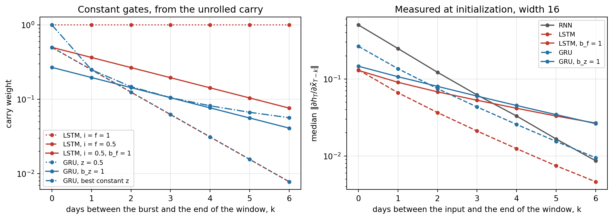
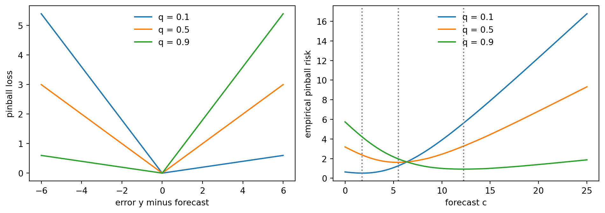
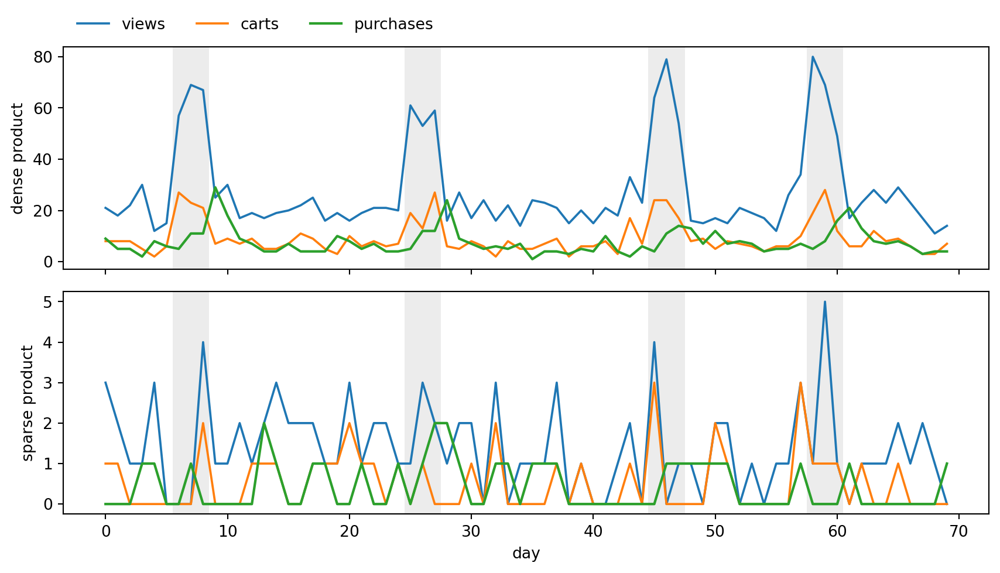
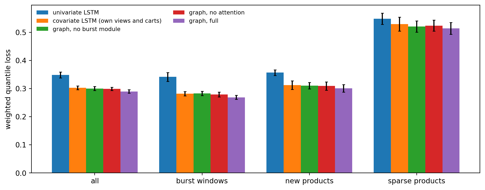
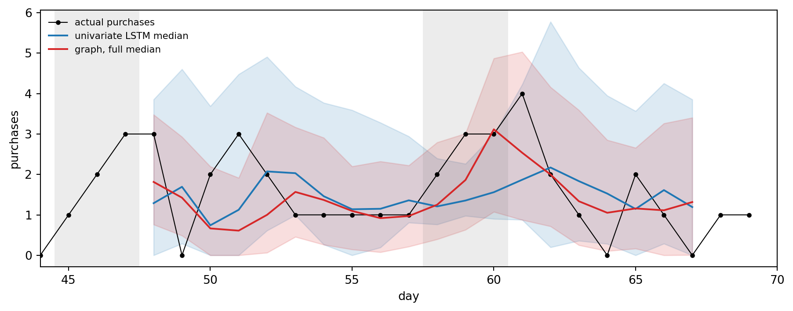
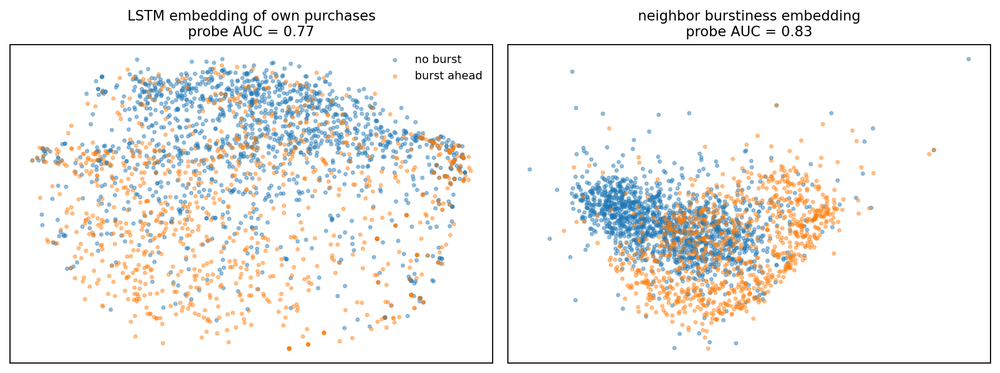
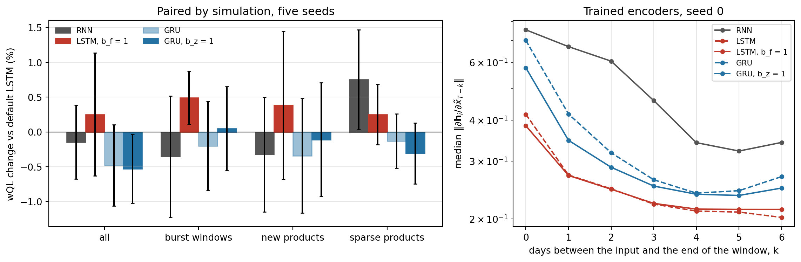

flowchart LR
AV["A view"] --> AC["A cart"]
AC --> AP["A purchase"]
AV --> AP
AV --> BV["B view"]
BV --> AV
BV --> BC["B cart"]
BV --> AP
19 Graph Embeddings for Clickstream Sales Forecasting
Node embeddings of time series, attention as a learned conversion rate, burstiness from neighbors, and quantile loss, worked through ForecastClickGraph
An online store records, for every product and every day, how many people viewed it, how many put it in a cart, and how many bought it. The usual sales forecaster looks only at the last column. This chapter is about what happens when you stop throwing the other two away, and when you also stop treating products as strangers: a shopper who looks at a camera and then a tripod is telling you something about both products, and a promotion that makes the tripod’s page views jump today is telling you something about the camera’s sales two days from now.
The chapter uses one paper as a worked example of embeddings: Liu, Chen, Zhang, Mai, and Zhao (2026), Let Clickstream Talk: A Graph Neural Network Approach to Sales Forecasting, published in Production and Operations Management, whose model they call ForecastClickGraph (Liu et al., 2026). The paper is a good teaching vehicle because it uses embeddings three different ways inside one forecaster. A recurrent network embeds each product-stage time series into a vector. A graph attention layer embeds the neighborhood of a node into a second vector. A burst module embeds the burstiness of the neighbors into a third. A learned gate then decides how much each embedding is allowed to contribute. If you understand why each of those steps is there, you understand most of what “an embedding” means in applied machine learning, well beyond forecasting. The chapter builds directly on the general treatment in Representations and embeddings, which introduces embedding tables, learned projections, and the geometry of embedding spaces; here we meet embeddings of time series and of graph neighborhoods.
The thesis of this chapter in one paragraph
A node embedding is a vector that summarizes a node together with what it is connected to, learned so that a downstream task becomes easy. For a forecaster, the node is a product-stage (for example, “camera, purchase”), its raw material is a short time series of counts, and the downstream task is a quantile forecast. Three ideas do the work. First, embed each series with a recurrent encoder so that products of very different volume become comparable vectors in one shared space, which lets one model learn from every product at once and serve products it has never seen. Second, let related nodes contribute through attention, where the softmax weight of a neighbor plays the role of a learned conversion rate from that neighbor’s behavior to the target’s sales. Third, summarize neighbors’ bursts with a scale-free score so that a promotion visible in a dozen related product pages shows up before it shows up in the target’s own sales. The loss that ties it together is the quantile (pinball) loss, which makes the model output an honest range instead of a single guess. Everything numerical in this chapter is backed by executable Python from the companion library aiinaction.ch_clickgraph, with Julia and Rust ports tested against the same fixtures.
A note on what is and is not claimed. The paper’s results come from a large public clickstream dataset and a full-scale model. The experiment in this chapter uses a small simulated clickstream that we generate ourselves, a compact version of the architecture, and a few minutes of CPU training. It is built to make the mechanisms visible and to let you run them, not to reproduce the paper’s numbers. Where this chapter reports a number, it is a number from our simulation, and where it quotes the paper, it says so. Section 19.9 lists the departures explicitly.
| Idea in the paper | What it teaches about embeddings | Where here | Tool in aiinaction.ch_clickgraph |
|---|---|---|---|
| Product-stage nodes with count series | A node can be a time series, not a word or a row | Section 19.1 | session_graph, average_graph, upstream_neighbors |
| Robust median scaling | Embeddings need inputs on a common scale | Section 19.2 | robust_median_scale |
| LSTM embedding of each series | A recurrent encoder is a function from a series to a vector | Section 19.2, Section 19.2.3 | lstm_embed, rnn_embed, gru_embed |
| Burstiness of upstream neighbors | Hand-built, scale-free features still help beside learned ones | Section 19.3 | burstiness, neighbor_burstiness, ema_last, burst_forecast |
| Graph Transformer neighbor embedding | Attention weights as a learned conversion rate | Section 19.4 | attention_neighbor_embedding, softmax |
| Sigmoid gate over three embeddings | Learned control over redundant signals | Section 19.5 | gated_forecast |
| Direct multi-step quantile forecast | A loss that targets a distribution, not a mean | Section 19.6 | pinball_loss, total_quantile_loss, weighted_quantile_loss |
| Cross learning and new products | Pooling across related items beats fitting each alone | Section 19.7 | simulation in the chapter |
19.1 From Sessions to a Graph of Product-Stage Nodes
A clickstream is a log of events. Each event has a timestamp, a user session, a product, and an event type such as view, add to cart, or purchase. The paper aggregates the log by day and models each day as a small directed graph.
Nodes. Every pair (product, stage) is a node. With \(P\) products and three stages there are \(N = 3P\) nodes. Node \(i\) has an attribute \(x_{i,t}\), the number of times that event occurred on day \(t\). So “SKU A viewed” might have \(x = 146\) on a given day, “SKU A added to cart” \(40\), and “SKU A purchased” \(9\).
Edges. A directed edge \(i \to j\) on day \(t\) has weight \(w_{i,j,t}\), the number of times sessions moved directly from event \(i\) to event \(j\). Edges come in two flavors. Intra-product edges follow one product through the funnel (view to cart, cart to purchase). Inter-product edges connect different products (a shopper views A and then views B, or views B and then buys A). The first flavor encodes the conversion funnel of one product; the second encodes substitution and complementarity between products, which is exactly the information a sales-history-only forecaster cannot see.
Formally, the clickstream over a context window of \(T\) days is a sequence of graphs \(\mathcal{G} = (G_1, \dots, G_T)\) with \(G_t = (V, E_t)\) and node series \(\mathbf{x}_i = (x_{i,1}, \dots, x_{i,T})\) and edge series \(\mathbf{w}_{i,j} = (w_{i,j,1}, \dots, w_{i,j,T})\). The forecasting problem is then to estimate, for a purchase node \(i\) and a horizon of \(H\) days, a set of conditional quantiles
\[ \hat{y}^{(q)}_{i,T+h} \;\approx\; Q_q\!\left(x_{i,T+h} \,\middle|\, \mathcal{G}\right), \qquad h = 1, \dots, H, \quad q \in \mathcal{Q}, \tag{19.1}\]
for a small set of levels \(\mathcal{Q}\) such as \(\{0.1, 0.5, 0.9\}\). Two preprocessing steps from the paper matter for everything that follows. The daily graphs inside the window are averaged into a stable graph, and each averaged edge weight is divided by the average quantity of its target node, so that an edge reads as “transitions per unit of target volume”, a rough conversion rate. The upstream neighbors of node \(j\) are then the nodes \(i\) with a positive normalized weight on \(i \to j\).
The library turns sessions into this structure. A session is an ordered list of node ids, session_graph counts node occurrences and consecutive transitions, and upstream_neighbors reads the sources of the incoming edges off the adjacency matrix. The cell below encodes a few sessions over five nodes (A view, A cart, A purchase, B view, B cart), which are the nodes of Figure 19.1 without B purchase, and prints the graph. A session that views A and then buys A directly, and one that views B and then buys A, give the extra edges into A purchase.
Code
import numpy as np
import pandas as pd
from aiinaction import ch_clickgraph as cg
names = ["A view", "A cart", "A purchase", "B view", "B cart"]
sessions = [[0, 1, 2], [0, 1], [0, 3, 0, 1], [3, 3, 4], [0, 2], [3, 2]] # node ids, in the order events happened
counts, W = cg.session_graph(sessions, n_nodes=5)
print("node counts:", dict(zip(names, counts.astype(int))))
print(pd.DataFrame(W.astype(int), index=names, columns=names).to_string())
for j in (1, 2, 3):
print(f"upstream neighbors of '{names[j]}':", [names[i] for i in cg.upstream_neighbors(W, j)])node counts: {'A view': np.int64(5), 'A cart': np.int64(3), 'A purchase': np.int64(3), 'B view': np.int64(4), 'B cart': np.int64(1)}
A view A cart A purchase B view B cart
A view 0 3 1 1 0
A cart 0 0 1 0 0
A purchase 0 0 0 0 0
B view 1 0 1 0 1
B cart 0 0 0 0 0
upstream neighbors of 'A cart': ['A view']
upstream neighbors of 'A purchase': ['A view', 'A cart', 'B view']
upstream neighbors of 'B view': ['A view']Notice what the adjacency matrix does not contain: any information about which day anything happened. Time lives in the sequence of graphs, one per day, and that is why the paper treats the node series \(\mathbf{x}_i\), not the node, as the thing to embed.
19.2 What a Node Embedding Is, and Embedding a Time Series
An embedding is a learned map \(f_\theta : \mathcal{X} \to \mathbb{R}^d\) from some object space to vectors, trained so that distances and directions in \(\mathbb{R}^d\) carry the information that a downstream task needs (see Representations and embeddings for the general theory). The objects can be words, as in skip gram, or rows of a categorical column, as in an embedding table. A node embedding maps a graph node, together with whatever the model is allowed to know about it, to a vector. Classical node embeddings such as DeepWalk and node2vec learn one free vector per node from random walks (Perozzi et al., 2014; Grover and Leskovec, 2016); graph neural networks instead compute the vector as a function of the node’s features and its neighbors’ features (Kipf and Welling, 2017; Gilmer et al., 2017).
ForecastClickGraph takes the second route and chooses a particular node feature: the node’s own recent time series. That choice has a consequence that is worth stating plainly. There is no lookup table with a row per product, so there is nothing to learn for a product that was never in the training data. A brand new product arrives with a short history of counts, and the encoder maps that history into the same vector space as every other product. This is the mechanism behind the paper’s cold-start result and the reason the model is called a cross learning model: one set of weights, trained on all products.
19.2.1 Scaling first
Counts from a blockbuster product and a niche product differ by orders of magnitude, and a recurrent network trained on raw counts would spend its capacity on the loud products. The paper rescales each series with a robust median scaler before embedding it. For a series \(\mathbf{x} = (x_1, \dots, x_T)\),
\[ \tilde{x}_t \;=\; \frac{x_t - \operatorname{med}(\mathbf{x})}{\operatorname{MAD}(\mathbf{x})}, \qquad \operatorname{MAD}(\mathbf{x}) \;=\; \frac{1}{T}\sum_{s=1}^{T} \left| x_s - \operatorname{med}(\mathbf{x}) \right|. \tag{19.2}\]
The paper’s worked example uses a purchase series \((9, 14, 17)\): the median is \(14\), the mean absolute deviation about it is \((5 + 0 + 3)/3 = 8/3\), and the scaled series is \((-1.875, 0, 1.125)\). (Rousseeuw and Croux (1993) study the median based version of the deviation; the arithmetic in the paper’s example is the mean based version, which is what the library implements. A constant series has zero deviation, and the library then divides by one rather than by zero.) Dividing by the deviation also gives the target a scale to be un-scaled by: a forecast made in scaled units is mapped back with \(\hat{y} = \operatorname{MAD} \cdot \tilde{y} + \operatorname{med}\).
19.2.2 The recurrent encoder
An LSTM reads the scaled series one step at a time and keeps a hidden state \(h_t \in \mathbb{R}^d\) and a cell state \(c_t \in \mathbb{R}^d\) (Hochreiter and Schmidhuber, 1997). With the input \(x_t\) and the previous hidden state concatenated into \(u_t = [x_t; h_{t-1}]\), the update is
\[ \begin{aligned} i_t &= \sigma(W_i u_t + b_i), & f_t &= \sigma(W_f u_t + b_f), \\ g_t &= \tanh(W_g u_t + b_g), & o_t &= \sigma(W_o u_t + b_o), \\ c_t &= f_t \odot c_{t-1} + i_t \odot g_t, & h_t &= o_t \odot \tanh(c_t). \end{aligned} \tag{19.3}\]
The input gate \(i_t\) decides how much new information to write, the forget gate \(f_t\) how much old memory to keep, and the output gate \(o_t\) how much of the memory to expose. Because \(c_t\) is updated additively, gradients flow across many steps without vanishing (the mechanism analyzed in the chapter on vanishing and exploding gradients). The embedding of the whole series is the last hidden state,
\[ \mathbf{h}_i \;=\; h_T\!\left(\tilde{\mathbf{x}}_i\right) \;\in\; (-1, 1)^d, \tag{19.4}\]
which has absorbed information from every earlier element through the recursion. Two series with the same shape but different volume map to nearby vectors after scaling, and two series with different shapes map to distant ones. That is all an embedding has to do.
The library’s lstm_embed is the same recursion in plain NumPy. The next cell checks it against PyTorch’s nn.LSTM, whose parameters use the same gate order (input, forget, cell candidate, output) and split the bias into two vectors that simply add.
Code
import torch
import torch.nn as nn
torch.manual_seed(0)
d_in, hid, T_ = 1, 4, 7
lstm = nn.LSTM(d_in, hid, batch_first=True)
series = np.array([0.0, 2.0, 1.0, 3.0, 8.0, 15.0, 11.0])
scaled = cg.robust_median_scale(series)
print(f"median = {scaled.median}, MAD = {scaled.mad:.4f}")
print("scaled:", np.round(scaled.scaled, 3))
x = torch.tensor(scaled.scaled, dtype=torch.float64).view(1, T_, 1)
lstm = lstm.double()
with torch.no_grad():
h_torch = lstm(x)[1][0][0, 0].numpy()
# Pack the torch parameters into the library layout W [x; h] and b
W_lib = np.concatenate([lstm.weight_ih_l0.detach().numpy(), lstm.weight_hh_l0.detach().numpy()], axis=1)
b_lib = (lstm.bias_ih_l0 + lstm.bias_hh_l0).detach().numpy()
h_lib = cg.lstm_embed(scaled.scaled[:, None], W_lib, b_lib)
print("torch embedding :", np.round(h_torch, 6))
print("library embedding:", np.round(h_lib, 6))
print("max abs difference:", float(np.abs(h_torch - h_lib).max()))median = 3.0, MAD = 4.4286
scaled: [-0.677 -0.226 -0.452 0. 1.129 2.71 1.806]
torch embedding : [-0.125021 -0.076256 -0.048079 -0.078352]
library embedding: [-0.125021 -0.076256 -0.048079 -0.078352]
max abs difference: 1.3877787807814457e-17The two agree to floating point precision, which is the point of keeping the encoder in the library: the formula in Equation 19.3 is the whole story, and nothing else is hiding inside the framework.
19.2.3 Choosing the encoder
The LSTM is the paper’s choice, but it is one of three standard recurrent cells, and Chapter 222 derives all three side by side: the vanilla (Elman) RNN (Elman, 1990), the LSTM with the forget gate of Gers, Schmidhuber, and Cummins (2000), and the gated recurrent unit (GRU) of Cho et al. (2014). That chapter counts their parameters, derives the Jacobians that carry gradients backward through time, and runs a delayed recall experiment over 5 to 100 steps in which the initial bias of the carry gate decides whether anything is remembered at all. Its question is long range memory. The question here is narrower, because the encoder in this chapter works under three conditions that a language model does not face. The windows are short (\(T = 7\) days). The inputs are robustly scaled counts (Equation 19.2), so a quiet day sits near zero and a promotion day can sit several deviations above it. And the information that matters most for a forecast, a burst, can arrive on any day of the window, while the embedding (Equation 19.4) is read only at the end. So the question to ask of an encoder is concrete: if a burst arrives on day \(s = T - k\), that is \(k\) days before the end of the window, how much of it is still present in \(h_T\)?
19.2.3.1 What survives of a burst \(k\) days back
LSTM. Unroll the cell update of Equation 19.3 from \(c_0 = 0\). For \(T = 1\) it gives \(c_1 = i_1 \odot g_1\). If \(c_{T-1} = \sum_{s=1}^{T-1} \big(\prod_{t=s+1}^{T-1} f_t\big) \odot i_s \odot g_s\), then
\[ c_T \;=\; f_T \odot c_{T-1} + i_T \odot g_T \;=\; \sum_{s=1}^{T} \Big(\prod_{t=s+1}^{T} f_t\Big) \odot i_s \odot g_s, \]
with the empty product equal to one, so by induction the cell state at the end of the window is a gated sum of everything written into it. The write of day \(s\) reaches \(c_T\) with the coordinatewise weight
\[ \rho^{\text{LSTM}}_{s} \;=\; i_s \odot \prod_{t=s+1}^{T} f_t, \tag{19.5}\]
and the embedding reads the sum out as \(h_T = o_T \odot \tanh(c_T)\). This is an identity, not a linearization. The gates depend on the data, but once their values on a window are known, Equation 19.5 says exactly how much of each day’s write is left at the end.
GRU. In the convention of Chapter 222, which is also PyTorch’s, the state update is \(h_t = z_t \odot h_{t-1} + (1 - z_t) \odot n_t\) with a candidate \(n_t \in (-1, 1)^d\) computed from \(x_t\) and the reset-gated \(h_{t-1}\). The same induction from \(h_0 = 0\) gives
\[ h_T \;=\; \sum_{s=1}^{T} \rho^{\text{GRU}}_s \odot n_s, \qquad \rho^{\text{GRU}}_s \;=\; (1 - z_s) \odot \prod_{t=s+1}^{T} z_t. \tag{19.6}\]
Write \(P_s = \prod_{t=s+1}^{T} z_t\), so that \(P_T = 1\) and \(\rho^{\text{GRU}}_s = P_s - P_{s-1}\). The weights telescope, \(\sum_{s=1}^{T} \rho^{\text{GRU}}_s = P_T - P_0 = 1 - \prod_{t=1}^{T} z_t \le 1\), so the GRU embedding is a weighted average of its candidates whose weights sum to at most one. With a constant update gate \(z\) the weight of day \(T - k\) is \((1 - z) z^k\), and \(h_T\) is exactly the exponential moving average of the candidates with smoothing \(\alpha = 1 - z\), started from zero. That is the same smoother that Equation 19.11 applies to raw counts, so a GRU is, in a precise sense, a learned EMA whose smoothing can change from day to day.
Vanilla RNN. Here the state is overwritten at every step, \(h_t = \tanh(W_x x_t + W_h h_{t-1} + b)\), so there is no additive carry and no weight to read off. Differentiating instead, with \(J_t = \operatorname{diag}(1 - h_t^2)\, W_h\),
\[ \frac{\partial h_T}{\partial x_{T-k}} \;=\; J_T J_{T-1} \cdots J_{T-k+1}\, \operatorname{diag}\big(1 - h_{T-k}^2\big)\, W_x, \qquad \Big\|\frac{\partial h_T}{\partial x_{T-k}}\Big\|_2 \;\le\; \sigma_{\max}(W_h)^{k}\, \|W_x\|_2, \tag{19.7}\]
because every diagonal factor has entries in \((0, 1]\). This is the bound of Chapter 222 applied to an input rather than to a state. Two things happen to a burst in a vanilla RNN. It decays through the same matrix at every later step, whatever the data, and it is clipped on its own day, because a value several deviations above zero drives \(h_{T-k}\) into the flat part of \(\tanh\), where \(1 - h_{T-k}^2 \approx 0\).
The trade-off a GRU cannot escape with constant gates. Compare the constant-gate weights. The LSTM’s are \(i f^k\), and \(i = f = 1\) keeps every write at full size for any \(k\): the cell is then an accumulator, which is the counting ability that Weiss, Goldberg, and Yahav (2018) prove a finite precision LSTM has and a GRU lacks. The GRU’s weights are \((1 - z) z^k\), and one gate sets both factors. Maximizing over \(z\),
\[ \frac{d}{dz}\Big[(1 - z) z^k\Big] \;=\; z^{k-1}\big(k - (k + 1) z\big) \;=\; 0 \;\;\Longrightarrow\;\; z^\ast = \frac{k}{k+1}, \qquad \max_{z}\,(1 - z) z^k \;=\; \frac{k^k}{(k+1)^{k+1}} \;\approx\; \frac{1}{e\,(k + 1)}, \tag{19.8}\]
where the approximation uses \(\big(1 - \tfrac{1}{k+1}\big)^{k} \to e^{-1}\). For a burst on the first day of a seven day window (\(k = 6\)) the best constant gate keeps \(6^6 / 7^7 \approx 0.057\) of it. The way out is a gate that depends on the input: a unit that sets \(z_s \approx 0\) on the burst day and \(z_t \approx 1\) on the quiet days after it keeps \(\rho^{\text{GRU}}_s \approx 1\). A trained GRU can learn exactly that, since its gates see \(x_t\). The constant-gate bound describes where training starts, and what any unit that does not tell burst days from quiet days can keep.
At initialization. PyTorch draws every weight and bias from \(U(-1/\sqrt{d}, 1/\sqrt{d})\), which is \(\pm 0.25\) at the chapter’s width \(d = 16\), so with scaled inputs of order one every gate starts near \(\sigma(0) = 1/2\). Both gated cells then start with \(\rho \approx 0.5^{k+1}\): one half of a burst on the last day reaches the cell state, and \(0.0078\) of a burst on the first day. A carry bias of one, \(\sigma(1) \approx 0.731\), the setting Jozefowicz, Zaremba, and Sutskever (2015) recommend for the LSTM, raises the first-day weight to \(0.5 \times 0.731^6 \approx 0.076\) for the LSTM, whose input gate stays at one half, and only to \(0.269 \times 0.731^6 \approx 0.041\) for the GRU, whose write weight \(1 - z\) falls as its retention rises.
19.2.3.2 Parameters at the chapter’s widths
Table 222.1 gives a cell with \(G\) gate blocks, input width \(m\) and hidden width \(d\) exactly \(G\,(dm + d^2 + 2d)\) parameters and \(2\,G\,d\,(m + d)\) multiply-add FLOPs per step. At the chapter’s \(d = 16\):
| Vanilla RNN | GRU | LSTM | |
|---|---|---|---|
| Gate blocks \(G\) | 1 | 3 | 4 |
| Parameters, \(m = 1\) (one scaled series: univariate and graph models) | 304 | 912 | 1,216 |
| Parameters, \(m = 3\) (views, carts, purchases: covariate model) | 336 | 1,008 | 1,344 |
| Recurrent FLOPs per graph-model example, \(m = 1\) | 26,656 | 79,968 | 106,624 |
The encoder is a small part of the graph model, whose heads, attention maps and gate hold most of its parameters (the ablation in Section 19.8.6 prints the totals), but it runs 49 times per example and sits on the only serial path. At parameter parity with the LSTM a GRU would get a width of about \(\sqrt{4/3} \times 16 \approx 18.5\); solving \(3(d + d^2 + 2d) = 1{,}216\) exactly gives \(d \approx 18.7\).
19.2.3.3 What the GRU would change
- Size and speed. Three quarters of the LSTM’s parameters and recurrent FLOPs at equal width.
- The embedding is the memory. The LSTM’s \(h_T = o_T \odot \tanh(c_T)\) is a gated read of an unbounded memory, which can hold something the output gate is not currently exposing. The GRU’s \(h_T\) is its memory: by Equation 19.6 a weighted average of candidates, bounded inside \((-1, 1)^d\). For this chapter that costs nothing, because the head and the query, key and value maps of the attention layer receive a vector in \((-1, 1)^d\) from either cell.
- Writing costs forgetting. Equation 19.8: on any day a GRU unit writes, it overwrites part of what it held. With one burst in a short window this matters little. With two events in one window, for example a weekend dip and then the first day of a promotion, the GRU must decide at the second how much of the first to give up, and the LSTM need not.
- No counting. An LSTM unit can accumulate a running total of its inputs and a GRU unit cannot. Robust scaling removes the level of the series before the encoder sees it and the forecast is unscaled afterward (Equation 19.2), which weakens the case for accumulation in this pipeline.
- Conventions. In PyTorch’s convention the remember bias of a GRU is a positive \(b_z\). And the GRU needs both of its bias vectors, because the candidate’s recurrent bias sits inside the reset gate (see Chapter 222). The library’s
gru_embedtherefore takesb_ihandb_hhseparately, whilelstm_embedandrnn_embedtake their sum.
The first cell below checks the two new library encoders against PyTorch and the parameter formula against PyTorch’s own count. The second confirms the unrolled carries Equation 19.5 and Equation 19.6, the telescoping sum and the maximizer of Equation 19.8 with SymPy, checks the EMA reading of a constant-gate GRU with the library, and then measures how strongly \(h_T\) depends on each day of a window at initialization.
Code
# rnn_embed and gru_embed against torch.nn.RNN and torch.nn.GRU on the scaled series above
torch.manual_seed(1)
enc_x = torch.tensor(scaled.scaled, dtype=torch.float64).view(1, -1, 1)
enc_rows = []
for enc_name, enc_cls in (("RNN", nn.RNN), ("GRU", nn.GRU)):
enc_net = enc_cls(1, hid, batch_first=True).double()
with torch.no_grad():
enc_torch = enc_net(enc_x)[1][0, 0].numpy()
enc_p = {k: v.detach().numpy() for k, v in enc_net.named_parameters()}
enc_W = np.concatenate([enc_p["weight_ih_l0"], enc_p["weight_hh_l0"]], axis=1)
if enc_name == "RNN": # the two RNN biases only ever appear as a sum
enc_lib = cg.rnn_embed(scaled.scaled[:, None], enc_W, enc_p["bias_ih_l0"] + enc_p["bias_hh_l0"])
else: # the GRU needs both: b_hn sits inside the reset gate
enc_lib = cg.gru_embed(scaled.scaled[:, None], enc_W, enc_p["bias_ih_l0"], enc_p["bias_hh_l0"])
enc_rows.append({"encoder": enc_name, "max |library - torch|": float(np.abs(enc_lib - enc_torch).max())})
print(pd.DataFrame(enc_rows).to_string(index=False))
# Parameter counts at the chapter's widths: G (d m + d^2 + 2 d) for G = 1, 3, 4
enc_count = []
for m_in in (1, 3):
for enc_name, enc_cls, G in (("RNN", nn.RNN, 1), ("GRU", nn.GRU, 3), ("LSTM", nn.LSTM, 4)):
enc_count.append({"input width m": m_in, "encoder": enc_name, "G": G,
"formula": G * (16 * m_in + 16 ** 2 + 2 * 16),
"torch": sum(p.numel() for p in enc_cls(m_in, 16).parameters())})
print(pd.DataFrame(enc_count).to_string(index=False))encoder max |library - torch|
RNN 1.110223e-16
GRU 1.110223e-16
input width m encoder G formula torch
1 RNN 1 304 304
1 GRU 3 912 912
1 LSTM 4 1216 1216
3 RNN 1 336 336
3 GRU 3 1008 1008
3 LSTM 4 1344 1344Code
import sympy as sp
import matplotlib.pyplot as plt
# === SymPy: the unrolled carries of @eq-cg-lstm-retention and @eq-cg-gru-retention, T = 7
T7 = 7
fs, i_s, gs = sp.symbols("f1:8"), sp.symbols("i1:8"), sp.symbols("g1:8")
zs, ns = sp.symbols("z1:8"), sp.symbols("n1:8")
c_run, h_run = sp.Integer(0), sp.Integer(0)
for t in range(T7):
c_run = fs[t] * c_run + i_s[t] * gs[t]
h_run = zs[t] * h_run + (1 - zs[t]) * ns[t]
c_sum = sum(i_s[s] * sp.prod(fs[s + 1:]) * gs[s] for s in range(T7))
a_s = [(1 - zs[s]) * sp.prod(zs[s + 1:]) for s in range(T7)]
print("LSTM: c_7 minus the gated sum of writes =", sp.expand(c_run - c_sum))
print("GRU : h_7 minus the weighted sum of candidates =", sp.expand(h_run - sum(a * n for a, n in zip(a_s, ns))))
print("GRU : sum of weights minus (1 - prod z) =", sp.expand(sum(a_s) - (1 - sp.prod(zs))))
z, k = sp.symbols("z k", positive=True)
z_star = sp.solve(sp.diff((1 - z) * z ** k, z), z)
print("GRU : argmax_z (1 - z) z^k =", z_star, " max =", sp.simplify(((1 - z) * z ** k).subs(z, z_star[0])))
# Numerical: a GRU with a constant update gate and a history-free candidate is an EMA
enc_W0 = np.zeros((3, 2))
enc_W0[2, 0] = 0.8 # candidate n_t = tanh(0.8 x_t + 0.1)
enc_b0 = np.array([0.0, 0.4, 0.1]) # update gate z = sigmoid(0.4)
enc_h = cg.gru_embed(scaled.scaled[:, None], enc_W0, enc_b0, np.zeros(3))[0]
enc_ema = cg.ema_last(np.r_[0.0, np.tanh(0.8 * scaled.scaled + 0.1)], 1 - float(cg.sigmoid(0.4)))
print(f"constant-gate GRU = {enc_h:.12f}, EMA of its candidates = {enc_ema:.12f}")
# === Carry weight of a burst k steps back under constant gates
ks = np.arange(7)
sig = lambda v: 1 / (1 + np.exp(-v))
theory = pd.DataFrame({
"LSTM, i = f = 1": np.ones(len(ks)),
"LSTM, i = f = 0.5": 0.5 * 0.5 ** ks,
"LSTM, i = 0.5, b_f = 1": 0.5 * sig(1.0) ** ks,
"GRU, z = 0.5": 0.5 * 0.5 ** ks,
"GRU, b_z = 1": (1 - sig(1.0)) * sig(1.0) ** ks,
"GRU, best constant z": ks ** ks / (ks + 1.0) ** (ks + 1),
}, index=pd.Index(ks, name="k"))
print("\nCarry weight of a burst k steps before the end (constant gates)")
print(theory.round(4).to_string())
# === Measured: median ||d h_T / d x_{T-k}|| at initialization, width 16
enc_rng = np.random.default_rng(7)
enc_windows = np.stack([cg.robust_median_scale(enc_rng.poisson(3.0, 7)).scaled for _ in range(64)])
enc_xw = torch.tensor(enc_windows, dtype=torch.float32)[..., None]
def enc_jacobian_norms(net, x_in):
"""Per window and lag, the norm of d h_T / d x_t (columns ordered k = 0, 1, ..., T-1)."""
x = x_in.clone().requires_grad_(True)
out = net(x)[1]
h_T = (out[0] if isinstance(out, tuple) else out)[0]
sq = torch.zeros(x.shape[0], x.shape[1])
for j in range(h_T.shape[1]):
g, = torch.autograd.grad(h_T[:, j].sum(), x, retain_graph=True)
sq += g[..., 0] ** 2
return sq.sqrt().numpy()[:, ::-1]
def enc_make(kind, carry_bias=None, d_in=1, width=16):
net = {"RNN": nn.RNN, "LSTM": nn.LSTM, "GRU": nn.GRU}[kind](d_in, width, batch_first=True)
if carry_bias is not None: # rows width:2 width are the LSTM forget gate and the GRU update gate
with torch.no_grad():
net.bias_ih_l0[width:2 * width].fill_(carry_bias)
net.bias_hh_l0[width:2 * width].fill_(0.0)
return net
ENC_ARMS = {"RNN": ("RNN", None), "LSTM": ("LSTM", None), "LSTM, b_f = 1": ("LSTM", 1.0),
"GRU": ("GRU", None), "GRU, b_z = 1": ("GRU", 1.0)}
measured = {}
for name, (kind, cb) in ENC_ARMS.items():
per_init = []
for s in range(100):
torch.manual_seed(1000 + s)
per_init.append(enc_jacobian_norms(enc_make(kind, cb), enc_xw))
measured[name] = np.median(np.concatenate(per_init), axis=0)
measured = pd.DataFrame(measured, index=pd.Index(ks, name="k"))
print("\nMedian ||d h_T / d x_{T-k}|| at initialization (100 inits x 64 windows)")
print(measured.map(lambda v: f"{v:.2e}").to_string())
print("\nratio k = 6 to k = 0:", (measured.iloc[6] / measured.iloc[0]).round(4).to_dict())
enc_style = {"RNN": ("#555555", "-"), "LSTM": ("#c0392b", "--"), "LSTM, b_f = 1": ("#c0392b", "-"),
"GRU": ("#2471a3", "--"), "GRU, b_z = 1": ("#2471a3", "-")}
theory_style = {"LSTM, i = f = 1": ("#c0392b", ":"), "LSTM, i = f = 0.5": ("#c0392b", "--"),
"LSTM, i = 0.5, b_f = 1": ("#c0392b", "-"),
"GRU, z = 0.5": ("#2471a3", ":"), "GRU, b_z = 1": ("#2471a3", "-"),
"GRU, best constant z": ("#2471a3", "-.")}
fig, axes = plt.subplots(1, 2, figsize=(11, 4))
for name, (col, ls) in theory_style.items():
axes[0].semilogy(ks, theory[name], ls, color=col, marker="o", ms=4, label=name)
for name, (col, ls) in enc_style.items():
axes[1].semilogy(ks, measured[name], ls, color=col, marker="o", ms=4, label=name)
axes[0].set(xlabel="days between the burst and the end of the window, k", ylabel="carry weight",
title="Constant gates, from the unrolled carry")
axes[1].set(xlabel="days between the input and the end of the window, k",
ylabel=r"median $\|\partial h_T / \partial \tilde{x}_{T-k}\|$", title="Measured at initialization, width 16")
for ax in axes:
ax.grid(alpha=0.3)
ax.legend(fontsize=8)
plt.tight_layout()
plt.show()LSTM: c_7 minus the gated sum of writes = 0
GRU : h_7 minus the weighted sum of candidates = 0
GRU : sum of weights minus (1 - prod z) = 0
GRU : argmax_z (1 - z) z^k = [k/(k + 1)] max = k**k*(k + 1)**(-k - 1)
constant-gate GRU = 0.696550832826, EMA of its candidates = 0.696550832826
Carry weight of a burst k steps before the end (constant gates)
LSTM, i = f = 1 LSTM, i = f = 0.5 LSTM, i = 0.5, b_f = 1 GRU, z = 0.5 GRU, b_z = 1 GRU, best constant z
k
0 1.0 0.5000 0.5000 0.5000 0.2689 1.0000
1 1.0 0.2500 0.3655 0.2500 0.1966 0.2500
2 1.0 0.1250 0.2672 0.1250 0.1437 0.1481
3 1.0 0.0625 0.1954 0.0625 0.1051 0.1055
4 1.0 0.0312 0.1428 0.0312 0.0768 0.0819
5 1.0 0.0156 0.1044 0.0156 0.0562 0.0670
6 1.0 0.0078 0.0763 0.0078 0.0411 0.0567
Median ||d h_T / d x_{T-k}|| at initialization (100 inits x 64 windows)
RNN LSTM LSTM, b_f = 1 GRU GRU, b_z = 1
k
0 5.04e-01 1.31e-01 1.29e-01 2.66e-01 1.46e-01
1 2.49e-01 6.63e-02 9.05e-02 1.36e-01 1.07e-01
2 1.22e-01 3.66e-02 6.80e-02 7.49e-02 8.01e-02
3 6.20e-02 2.11e-02 5.29e-02 4.33e-02 5.99e-02
4 3.30e-02 1.24e-02 4.16e-02 2.56e-02 4.52e-02
5 1.66e-02 7.43e-03 3.30e-02 1.54e-02 3.44e-02
6 8.64e-03 4.62e-03 2.67e-02 9.47e-03 2.62e-02
ratio k = 6 to k = 0: {'RNN': 0.01720000058412552, 'LSTM': 0.035100001841783524, 'LSTM, b_f = 1': 0.20649999380111694, 'GRU': 0.035599999129772186, 'GRU, b_z = 1': 0.17919999361038208}
The library encoders agree with PyTorch to about \(10^{-16}\), and the formula \(G(dm + d^2 + 2d)\) matches PyTorch’s own parameter count in all six cases of Table 19.2. SymPy returns zero for both unrolled carries and for the telescoping sum, and solves Equation 19.8 to \(z^\ast = k/(k+1)\) with maximum \(k^k (k+1)^{-(k+1)}\). A constant-gate GRU and the library’s ema_last of its candidates agree to twelve digits (\(0.696550832826\)), which is the EMA reading of Equation 19.6 made numerical.
The right panel of Figure 19.2 is the measurement. At initialization every encoder depends most on the last day of the window and less on each earlier one. The ratio of the sensitivity to the first day (\(k = 6\)) to that to the last day (\(k = 0\)) is \(0.017\) for the vanilla RNN, \(0.035\) for the default LSTM and \(0.036\) for the default GRU, against \(0.5^6 \approx 0.016\) from the carry alone; the gated cells sit a little above the direct path prediction because the Jacobian also collects the indirect paths through the gates. A carry bias of one raises the ratio to \(0.21\) for the LSTM and \(0.18\) for the GRU, close to the \(0.731^6 \approx 0.15\) that the direct path predicts. So an untrained encoder with default initialization sees the first day of a window at about three and a half percent of the weight it gives the last, and a vanilla RNN at under two percent. Whether training removes that handicap, and whether the choice of cell then matters for the forecast, are empirical questions, and Section 19.8.6 answers them inside the forecaster.
19.3 Burstiness: Early Warning from Related Nodes
Promotions are the hard case in retail forecasting. A product’s own sales history is flat until the promotion starts, so a model that sees only that history cannot anticipate it. But the promotion usually shows up first in attention: pages are viewed, items are added to carts, and only then do orders arrive. The paper’s Figure 4 shows two related products whose view and cart counts begin to rise on a given day and whose purchases follow two days later. If the burst in the upstream nodes can be detected, it is an early signal of the burst in sales.
19.3.1 The burstiness score
Lappas, Arai, Platakis, Kotsakos, and Gunopulos (2009) define the burstiness of a segment of a series as the observed share of the total minus the expected share. For a single interval \(t\) in a window of length \(T\),
\[ B_t(\mathbf{x}) \;=\; \frac{x_t}{\sum_{s=1}^{T} x_s} \;-\; \frac{1}{T}. \tag{19.9}\]
The expected share under no burst is uniform, \(1/T\), so \(B_t > 0\) says that interval \(t\) holds more than its fair share of the window. Three properties follow directly and are worth knowing before using the score.
- It is scale free. Multiplying the series by any \(c > 0\) leaves \(B_t\) unchanged, so a niche product and a blockbuster speak the same language.
- The scores sum to zero: \(\sum_t B_t = \sum_t x_t / \sum_s x_s - T/T = 0\). A burst in one interval is paid for by deficits elsewhere.
- It is bounded: \(-1/T \le B_t \le 1 - 1/T\), attained when interval \(t\) is empty or holds all the mass.
The paper’s example series \((9, 14, 17)\) has total \(40\), so \(B = (9/40 - 1/3,\; 14/40 - 1/3,\; 17/40 - 1/3) = (-0.108, 0.017, 0.092)\): the last two days exceed the baseline of one third.
19.3.2 Averaging over upstream neighbors
For a node \(j\) with upstream neighbors \(\mathcal{N}^{\text{up}}(j)\), the paper averages the neighbors’ burstiness series into a neighbor burstiness context,
\[ \mathbf{b}_j \;=\; \frac{1}{\left|\mathcal{N}^{\text{up}}(j)\right|} \sum_{i \in \mathcal{N}^{\text{up}}(j)} B(\mathbf{x}_i). \tag{19.10}\]
Averaging is not just bookkeeping. A burst in a single series may be noise; simultaneous bursts across many neighbors are more likely a platform wide promotion. We can make that precise. Suppose each neighbor’s burstiness is a common promotion signal \(s_t\) plus independent noise of variance \(\sigma^2\). The average over \(n\) neighbors has the same signal and noise variance \(\sigma^2 / n\), so the signal to noise ratio improves by a factor of \(n\) in power. A product with four dense, related neighbors sees the promotion through a four times cleaner lens than its own sparse series offers.
19.3.3 From score to forecast
The neighbor burstiness series (length \(T\)) is passed through a dense layer to give a burstiness embedding, and a small network maps that embedding to raw outputs \(r_{h,q}\). Because the inputs are scale free, the outputs should be as well, so the paper bounds them with a hyperbolic tangent and interprets them as a relative deviation from the current trend, then multiplies by an exponential moving average \(\bar{x}\) of the node’s own recent counts:
\[ \hat{y}^{\text{burst}}_{h,q} \;=\; \tanh\!\left(r_{h,q}\right)\cdot \bar{x}, \qquad \bar{x}_t = \alpha\, x_t + (1 - \alpha)\, \bar{x}_{t-1}. \tag{19.11}\]
With \(\alpha = 0.7\) (the paper’s example value) the trend follows recent days closely. The tanh guarantees that the burst module can move the forecast by at most one trend unit in either direction, which keeps a misfiring module from producing absurd forecasts.
The cell below verifies the three properties of Equation 19.9 symbolically with SymPy and reproduces the paper’s example numbers with the library, then simulates the averaging argument.
Code
import sympy as sp
# Symbolic: the scores sum to zero for any positive series of length 5
xs = sp.symbols("x1:6", positive=True)
S = sum(xs)
B_sym = [x / S - sp.Rational(1, 5) for x in xs]
print("sum of burstiness scores (symbolic):", sp.simplify(sum(B_sym)))
c = sp.symbols("c", positive=True)
print("scale invariance:", sp.simplify((c * xs[0]) / (c * S) - xs[0] / S))
# Paper example (Figure 3): purchase series of SKU A is (9, 14, 17)
print("burstiness of (9, 14, 17):", np.round(cg.burstiness([9, 14, 17]), 3))
print("same after scaling x 100 :", np.round(cg.burstiness([900, 1400, 1700]), 3))
# Averaging n neighbors cuts noise variance by n (common signal + independent noise)
rng = np.random.default_rng(0)
signal = np.array([0, 0, 0, 0.4, 0.8, 0.6, 0.2])
for n in (1, 2, 4, 8):
noise = rng.normal(0, 0.5, size=(20000, n, signal.size))
avg = (signal + noise).mean(axis=1)
print(f"n = {n}: variance of the averaged series = {avg.var(axis=0).mean():.4f} (theory {0.25 / n:.4f})")sum of burstiness scores (symbolic): 0
scale invariance: 0
burstiness of (9, 14, 17): [-0.108 0.017 0.092]
same after scaling x 100 : [-0.108 0.017 0.092]
n = 1: variance of the averaged series = 0.2505 (theory 0.2500)
n = 2: variance of the averaged series = 0.1255 (theory 0.1250)
n = 4: variance of the averaged series = 0.0627 (theory 0.0625)
n = 8: variance of the averaged series = 0.0310 (theory 0.0312)19.4 Attention as a Learned Conversion Rate
The neighbor burstiness feature treats all upstream neighbors alike. A purchase node, though, is much more strongly driven by its own cart node than by the view node of a faintly related product. The paper uses a Graph Transformer layer (Shi et al., 2021) to let the data decide how much each neighbor matters, and reads the attention weights as estimates of conversion rates between stages.
19.4.1 The layer
Let \(\mathbf{h}_j \in \mathbb{R}^d\) be the LSTM embedding of node \(j\) and \(e_{ij}\) the normalized weight of the edge \(i \to j\). For a target node \(j\) and an upstream neighbor \(i\), form a query from the target and a key from the neighbor, and let the edge weight shift the key:
\[ \mathbf{q}_j = W_Q \mathbf{h}_j, \qquad \mathbf{k}_{i} = W_K \mathbf{h}_i + \mathbf{w}_e\, e_{ij}, \qquad \mathbf{v}_i = W_V \mathbf{h}_i, \tag{19.12}\]
with \(W_Q, W_K \in \mathbb{R}^{d_k \times d}\), \(W_V \in \mathbb{R}^{d_v \times d}\) and an edge vector \(\mathbf{w}_e \in \mathbb{R}^{d_k}\). (The paper passes the edge weight through a dense layer; a scalar weight times a learned vector is the same thing.) The attention weight of neighbor \(i\) is a softmax of the scaled dot products over the neighbors, and the neighbor embedding is the attention weighted sum of the values:
\[ \alpha_{ij} \;=\; \frac{\exp\!\left(\mathbf{q}_j^{\top}\mathbf{k}_i / \sqrt{d_k}\right)}{\sum_{m \in \mathcal{N}^{\text{up}}(j)} \exp\!\left(\mathbf{q}_j^{\top}\mathbf{k}_m / \sqrt{d_k}\right)}, \qquad \mathbf{z}_j \;=\; \sum_{i \in \mathcal{N}^{\text{up}}(j)} \alpha_{ij}\, \mathbf{v}_i. \tag{19.13}\]
Why divide by \(\sqrt{d_k}\)? If the components of \(\mathbf{q}\) and \(\mathbf{k}\) are independent with zero mean and unit variance, then \(\mathbf{q}^\top\mathbf{k} = \sum_{r=1}^{d_k} q_r k_r\) is a sum of \(d_k\) independent terms each of variance one, so its variance is \(d_k\) and its standard deviation \(\sqrt{d_k}\). Dividing by \(\sqrt{d_k}\) restores unit variance and keeps the softmax out of its saturated regime, where one neighbor would receive all the weight and the gradient to the others would vanish.
19.4.2 Why the weights read as conversion rates
A conversion rate is a share. If \(w_{ij}\) is the transition count from neighbor \(i\) to target \(j\), the empirical share of \(j\)’s inflow that comes from \(i\) is \(w_{ij} / \sum_m w_{mj}\). Attention has exactly this form, with the scores playing the role of log weights. If the score is \(\log w_{ij}\), then
\[ \alpha_{ij} \;=\; \frac{\exp(\log w_{ij})}{\sum_m \exp(\log w_{mj})} \;=\; \frac{w_{ij}}{\sum_m w_{mj}}. \tag{19.14}\]
So attention contains the empirical conversion share as a special case, and a trained layer generalizes it: the query and key depend on the embeddings, so the weight on a neighbor can rise when that neighbor’s recent behavior (for example a rising view series) says it is currently informative, and fall when it is not. That is the sense in which the paper calls the attention score a proxy for the conversion rate. It is a proxy and not an identified causal quantity, a caveat we return to in the experiment.
The neighbor embedding \(\mathbf{z}_j\) is passed through its own MLP to produce a neighbor forecast. Nodes with no upstream neighbors receive \(\mathbf{z}_j = \mathbf{0}\), so the layer degrades gracefully on the sparse graphs that new products have.
Code
import sympy as sp
import torch
# 1. Symbolic: with scores log(w), softmax is the normalized transition share
w1, w2, w3 = sp.symbols("w1 w2 w3", positive=True)
scores = [sp.log(w) for w in (w1, w2, w3)]
den = sum(sp.exp(s) for s in scores)
for w, s in zip((w1, w2, w3), scores):
print("softmax(log w) - w / sum(w) =", sp.simplify(sp.exp(s) / den - w / (w1 + w2 + w3)))
# 2. Numerical: Var(q . k) = d_k for unit variance components, and the 1/sqrt(d_k) fix
rng = np.random.default_rng(1)
for dk in (4, 16, 64, 256):
q = rng.normal(size=(20000, dk))
k = rng.normal(size=(20000, dk))
dots = (q * k).sum(axis=1)
print(f"d_k = {dk:3d}: Var(q.k) = {dots.var():7.2f}, Var(q.k / sqrt(d_k)) = {(dots / np.sqrt(dk)).var():.3f}")
# 3. The library layer against a direct PyTorch computation on the same weights
Wq, Wk, Wv = cg.det_matrix(3, 4, 0.1), cg.det_matrix(3, 4, 0.2), cg.det_matrix(2, 4, 0.3)
we, Hn = cg.det_matrix(1, 3, 0.4)[0], cg.det_matrix(3, 4, 0.5)
h_i, e = np.array([0.5, -0.2, 0.1, 0.8]), np.array([0.2, 1.0, 0.5])
z_np, a_np = cg.attention_neighbor_embedding(h_i, Hn, e, Wq, Wk, Wv, we)
t = lambda a: torch.tensor(a, dtype=torch.float64)
q_t = t(Wq) @ t(h_i)
k_t = t(Hn) @ t(Wk).T + t(e)[:, None] * t(we)[None, :]
a_t = torch.softmax(k_t @ q_t / np.sqrt(3), dim=0)
z_t = a_t @ (t(Hn) @ t(Wv).T)
print("attention (library):", np.round(a_np, 6))
print("attention (torch) :", np.round(a_t.numpy(), 6))
print("embedding diff :", float(np.abs(z_np - z_t.numpy()).max()))softmax(log w) - w / sum(w) = 0
softmax(log w) - w / sum(w) = 0
softmax(log w) - w / sum(w) = 0
d_k = 4: Var(q.k) = 4.02, Var(q.k / sqrt(d_k)) = 1.005
d_k = 16: Var(q.k) = 15.87, Var(q.k / sqrt(d_k)) = 0.992
d_k = 64: Var(q.k) = 63.11, Var(q.k / sqrt(d_k)) = 0.986
d_k = 256: Var(q.k) = 254.80, Var(q.k / sqrt(d_k)) = 0.995
attention (library): [0.351483 0.28412 0.364397]
attention (torch) : [0.351483 0.28412 0.364397]
embedding diff : 2.7755575615628914e-1719.5 Assembling the Forecast
The three embeddings feed three forecast heads. The base forecast \(\hat{\mathbf{y}}^{\text{base}}\) comes from an MLP on the node’s own LSTM embedding \(\mathbf{h}_j\). The burst forecast \(\hat{\mathbf{y}}^{\text{burst}}\) comes from Equation 19.11. The neighbor forecast \(\hat{\mathbf{y}}^{\text{nbr}}\) comes from an MLP on \(\mathbf{z}_j\). All three are matrices of shape \(H \times |\mathcal{Q}|\): one quantile forecast per horizon step, produced at once. This is the direct multi-step strategy of Wen, Torkkola, Narayanaswamy, and Madeka (2017), which avoids feeding a model its own predictions and so avoids the compounding of errors that recursive forecasters suffer.
Simply adding all three would double count. A neighbor that is the node’s own cart count already shows up in \(\mathbf{h}_j\); and in a burst the neighbors’ series contain the burst that the burst module is already modeling. The paper therefore gates the neighbor forecast. A dense layer on the concatenation of the three embeddings produces logits \(\mathbf{g}\), a sigmoid squashes them into \((0, 1)\), and the final forecast is
\[ \hat{\mathbf{y}} \;=\; \hat{\mathbf{y}}^{\text{base}} + \hat{\mathbf{y}}^{\text{burst}} + \sigma(\mathbf{g}) \odot \hat{\mathbf{y}}^{\text{nbr}}, \qquad \mathbf{g} = W_g\,[\mathbf{h}_j;\, \mathbf{e}^{\text{burst}}_j;\, \mathbf{z}_j] + \mathbf{b}_g. \tag{19.15}\]
The gate is a learned fraction in \([0, 1]\) per horizon step and quantile: it can pass the neighbor forecast through unchanged when the neighbors carry information the other two do not, and shrink it toward zero when they merely repeat what is already known.
flowchart LR
S["Daily graphs"] --> L["LSTM node embedding"]
S --> BU["Neighbor burstiness"]
L --> BASE["Base forecast"]
BU --> BF["Burst forecast"]
L --> ATT["Graph attention embedding"]
ATT --> NF["Neighbor forecast"]
L --> G["Sigmoid gate"]
BU --> G
ATT --> G
G --> GN["Gate times neighbor forecast"]
NF --> GN
BASE --> SUM["Sum of three"]
BF --> SUM
GN --> SUM
SUM --> LOSS["Quantile loss"]
19.6 Quantile Loss: Training a Model to Output a Range
A point forecast hides the thing an inventory planner most needs: how wrong it might be. A quantile forecast at level \(q\) is a number \(\hat{y}^{(q)}\) such that the outcome falls below it with probability \(q\). Producing the \(0.1\), \(0.5\), and \(0.9\) quantiles gives a median and an \(80\) percent prediction interval, and ordering a stock level at the \(0.9\) quantile is a direct way to trade stockouts against overstock.
19.6.1 The pinball loss
The loss that makes a model’s output converge to a conditional quantile is the pinball (or check) loss of Koenker and Bassett (1978),
\[ \rho_q(y, \hat{y}) \;=\; q\,(y - \hat{y})_+ \;+\; (1 - q)\,(\hat{y} - y)_+, \qquad (u)_+ = \max(0, u). \tag{19.16}\]
Under-forecasting costs \(q\) per unit and over-forecasting costs \(1 - q\) per unit. For \(q = 0.75\), an actual of \(10\) against a forecast of \(8\) costs \(0.75 \times 2 = 1.5\) (the paper’s example), while the reverse error costs only \(0.25 \times 2 = 0.5\). At \(q = 0.5\) the loss is half the absolute error, and the minimizer is the median. The paper sums the loss over quantiles, horizon steps, and target products, \(\mathcal{L} = \sum_{i}\sum_{h}\sum_{q} \rho_q(y_{i,T+h}, \hat{y}^{(q)}_{i,T+h})\).
19.6.2 Why the minimizer is the quantile
Let \(Y\) have distribution function \(F\) and density \(f\). The expected loss of a forecast \(c\) is
\[ R(c) \;=\; q \int_{c}^{\infty} (y - c)\, f(y)\, dy \;+\; (1 - q) \int_{-\infty}^{c} (c - y)\, f(y)\, dy. \tag{19.17}\]
Differentiate with respect to \(c\) using the Leibniz rule. The boundary terms vanish because the integrands are zero at \(y = c\), leaving
\[ R'(c) \;=\; -q \int_{c}^{\infty} f(y)\, dy \;+\; (1 - q) \int_{-\infty}^{c} f(y)\, dy \;=\; -q\,\bigl(1 - F(c)\bigr) + (1 - q)\,F(c) \;=\; F(c) - q. \tag{19.18}\]
Setting \(R'(c) = 0\) gives \(F(c^\ast) = q\), so \(c^\ast = F^{-1}(q)\), the \(q\)-quantile. And \(R''(c) = f(c) \ge 0\), so the stationary point is a minimum. Gneiting (2011) develops the converse, that quantiles are the optimal point forecasts under this loss, and places it within the theory of strictly proper scoring rules (Gneiting and Raftery, 2007).
19.6.3 Scale free evaluation and calibration
Pinball losses are in the units of the data, so a few high volume products dominate a sum across products. The standard scale free summary is the weighted quantile loss,
\[ \operatorname{wQL}_q \;=\; \frac{2 \sum_{i,h} \rho_q\!\left(y_{i,h}, \hat{y}^{(q)}_{i,h}\right)}{\sum_{i,h} |y_{i,h}|}, \tag{19.19}\]
and we report its average over \(q \in \{0.1, 0.5, 0.9\}\). A good quantile forecast must also be calibrated: the \(0.1\) to \(0.9\) band should contain about \(80\) percent of outcomes. The library’s interval_coverage measures that.
The cell below verifies the derivation with SymPy for an exponential distribution, then checks it numerically and plots the pinball loss.
Code
import matplotlib.pyplot as plt
import sympy as sp
# Symbolic check for Y ~ Exponential(lam): R'(c) = F(c) - q and the minimizer is -ln(1-q)/lam
y, c, lam, q = sp.symbols("y c lambda q", positive=True)
f = lam * sp.exp(-lam * y)
R = q * sp.integrate((y - c) * f, (y, c, sp.oo)) + (1 - q) * sp.integrate((c - y) * f, (y, 0, c))
dR = sp.simplify(sp.diff(R, c))
F = 1 - sp.exp(-lam * c)
print("R'(c) - (F(c) - q) =", sp.simplify(dR - (F - q)))
print("minimizer c* =", sp.solve(sp.Eq(dR, 0), c))
# Numerical: minimize the empirical pinball risk over a grid, compare with the sample quantile
rng = np.random.default_rng(3)
sample = rng.gamma(2.0, 3.0, 3000)
grid = np.linspace(0, 25, 501)
fig, ax = plt.subplots(1, 2, figsize=(10, 3.6))
err = np.linspace(-6, 6, 241)
for qq in (0.1, 0.5, 0.9):
ax[0].plot(err, [cg.pinball_loss(e, 0.0, qq) for e in err], label=f"q = {qq}")
ax[0].set_xlabel("error y minus forecast")
ax[0].set_ylabel("pinball loss")
ax[0].legend(frameon=False)
for qq in (0.1, 0.5, 0.9):
risk = np.array([np.mean([cg.pinball_loss(v, cc, qq) for v in sample[:600]]) for cc in grid[::5]])
best = grid[::5][int(np.argmin(risk))]
ax[1].plot(grid[::5], risk, label=f"q = {qq}")
ax[1].axvline(best, ls=":", c="gray")
print(f"q = {qq}: grid minimizer = {best:5.2f}, sample quantile = {np.quantile(sample[:600], qq):5.2f}")
ax[1].set_xlabel("forecast c")
ax[1].set_ylabel("empirical pinball risk")
ax[1].legend(frameon=False)
plt.tight_layout()
plt.show()
print("paper example, q = 0.75, y = 10, forecast 8:", cg.pinball_loss(10, 8, 0.75))
print("paper example reversed, y = 8, forecast 10 :", cg.pinball_loss(8, 10, 0.75))R'(c) - (F(c) - q) = 0
minimizer c* = [log(-1/(q - 1))/lambda]
q = 0.1: grid minimizer = 1.75, sample quantile = 1.82
q = 0.5: grid minimizer = 5.50, sample quantile = 5.42
q = 0.9: grid minimizer = 12.25, sample quantile = 12.25
paper example, q = 0.75, y = 10, forecast 8: 1.5
paper example reversed, y = 8, forecast 10 : 0.519.7 Pooling Across Products and the Cold-Start Problem
Why should a single model trained on every product beat a separate model for each? The classical answer is shrinkage. Suppose the true daily rate of product \(p\) is \(\mu_p\), drawn from a population with mean \(m\) and variance \(\tau^2\), and we observe the mean \(\bar{y}_p\) of \(n\) days with sampling variance \(\sigma^2 / n\). The unpooled estimate \(\bar{y}_p\) has mean squared error \(\sigma^2/n\). The pooled (empirical Bayes) estimate shrinks toward the population mean,
\[ \hat{\mu}_p \;=\; m + B\,(\bar{y}_p - m), \qquad B \;=\; \frac{\tau^2}{\tau^2 + \sigma^2 / n}, \tag{19.20}\]
and has mean squared error \(B\,\sigma^2/n < \sigma^2/n\). The shorter the history (small \(n\)) and the noisier the counts (large \(\sigma^2\)), the smaller \(B\) and the larger the gain. This is the statistical content of cross learning, and it was recognized for sports batting averages and many other problems by Efron and Morris (1973, 1975): borrowing strength across related units reduces total error. A new product is the extreme case \(n \approx 0\), where the pooled estimate is just \(m\), the population level, and any signal in a handful of days of data moves it from there.
An embedding model is a flexible version of the same idea. The encoder’s shared weights are the population; a new series is mapped into that space and the head reads a forecast off its location. The graph adds a second source of borrowing: the burstiness and attention of neighbors tell the model about the product’s environment even when its own history is thin. The paper adds a sober observation that we will see echoed in our simulation: new products have few neighbors (the authors report an average incoming degree of about 1.07 for purchase nodes of new products), so the graph components help them less than they help established products, and much of the cold-start gain comes from the pooled, shared encoder.
Code
rng = np.random.default_rng(5)
n_prod = 4000
mu = rng.gamma(2.0, 1.5, n_prod) # true daily rates, population mean 3
rows = []
for n in (1, 2, 3, 7, 14, 28):
obs = rng.poisson(mu[:, None], size=(n_prod, n)).mean(axis=1)
m_hat = obs.mean()
# method of moments for tau^2: Var(ybar) = tau^2 + E[mu]/n for Poisson counts
tau2 = max(obs.var() - m_hat / n, 1e-9)
B = tau2 / (tau2 + m_hat / n)
pooled = m_hat + B * (obs - m_hat)
rows.append((n, B, np.mean((obs - mu) ** 2), np.mean((pooled - mu) ** 2)))
df = pd.DataFrame(rows, columns=["days of history n", "shrinkage B", "MSE unpooled", "MSE pooled"])
df["MSE reduction"] = 1 - df["MSE pooled"] / df["MSE unpooled"]
df.round(3)| days of history n | shrinkage B | MSE unpooled | MSE pooled | MSE reduction | |
|---|---|---|---|---|---|
| 0 | 1 | 0.583 | 3.000 | 1.822 | 0.393 |
| 1 | 2 | 0.749 | 1.571 | 1.135 | 0.278 |
| 2 | 3 | 0.812 | 1.024 | 0.825 | 0.194 |
| 3 | 7 | 0.910 | 0.429 | 0.391 | 0.089 |
| 4 | 14 | 0.953 | 0.219 | 0.210 | 0.042 |
| 5 | 28 | 0.976 | 0.109 | 0.106 | 0.028 |
The table shows the predicted pattern: with one day of history the pooled estimate removes about 39 percent of the squared error, with a week about 9 percent, and with four weeks about 3 percent. Short histories are exactly where an e-commerce catalog lives, because most products are young, rarely bought, or both.
19.8 Experiment: A Simulated Clickstream with Promotion Bursts
We now put the pieces together on data we control. The library’s simulate_clickstream generates \(P = 120\) products in eight categories over \(D = 70\) days. Each product has a base attention rate (half the products are sparse, a few views a day, and half are dense), weekly seasonality, and a promotion calendar by category. A promotion multiplies the attention of every product in the category by \(1 + g_p\) for three days, where the gain \(g_p\) is product specific. Views follow attention, carts are a binomial thinning of views, and purchases follow attention with a lag of one to three days, so the burst in views and carts precedes the burst in purchases, as in the paper’s Figure 4. Edges are the funnel transitions plus inter-product transitions to four related products in the same category.
The design is deliberately favorable to graph features in one respect and deliberately fair in another. It is favorable because promotions are category wide and visible in the page views of dense related products. It is fair because the univariate baseline is the same encoder and head as the base branch of the graph model, and a covariate baseline that sees the product’s own views and carts is included, so we can separate the value of the product’s own funnel from the value of its neighbors.
Code
import matplotlib.pyplot as plt
cs = cg.simulate_clickstream(n_products=120, n_days=70, n_categories=8, seed=0)
views, carts, buys = cs.counts[:, 0::3], cs.counts[:, 1::3], cs.counts[:, 2::3]
cat = 0
members = np.flatnonzero(cs.category == cat)
dense = members[np.argmax(views[:, members].mean(axis=0))]
sparse = members[np.argmin(views[:, members].mean(axis=0))]
promo_days = np.flatnonzero(cs.promo[:, dense] > 0)
fig, axes = plt.subplots(2, 1, figsize=(9, 5.2), sharex=True)
for ax, p, lab in zip(axes, (dense, sparse), ("dense product", "sparse product")):
ax.plot(views[:, p], label="views", lw=1.4)
ax.plot(carts[:, p], label="carts", lw=1.4)
ax.plot(buys[:, p], label="purchases", lw=1.6)
for d in promo_days:
ax.axvspan(d - 0.5, d + 0.5, color="gray", alpha=0.15, lw=0)
ax.set_ylabel(lab)
axes[0].legend(frameon=False, ncol=3, loc="lower left", bbox_to_anchor=(0.0, 1.0))
axes[1].set_xlabel("day")
plt.tight_layout()
plt.show()
print(f"products: {cs.n_products}, days: {cs.n_days}, nodes: {cs.counts.shape[1]}")
print(f"mean daily views {views.mean():.2f}, carts {carts.mean():.2f}, purchases {buys.mean():.2f}")
print(f"share of product-days under promotion: {cs.promo.mean():.2f}")
products: 120, days: 70, nodes: 360
mean daily views 11.58, carts 3.20, purchases 3.98
share of product-days under promotion: 0.1819.8.1 Windows, neighbors, and the model
Each training example is a window: \(T = 7\) days of context, and the next \(H = 3\) days of purchases as the target. For every window we average the daily graphs inside the context, normalize edge weights by the target’s average quantity, and take the top \(K = 6\) upstream neighbors of the product’s purchase node. The temporal split is strict: training windows have targets on days \(7\) to \(44\), test windows have contexts that start no earlier than day \(41\) and targets on days \(48\) to \(69\), and \(20\) percent of products are held out of training entirely (the new product group). The held-out products never contribute a gradient, but they can still appear as neighbors of trained products, as they would in a live system.
The cell defines the data preparation and a single model class with five modes: univariate (own purchase series only), covariate (own views, carts, and purchases), the full graph model, and two ablations that remove the burst module or the attention module.
Code
import time
import torch
import torch.nn as nn
torch.set_num_threads(4)
T, H, QS, K = 7, 3, (0.1, 0.5, 0.9), 6
NQ = len(QS)
def build_windows(cs):
"""Per window end: top-K upstream neighbors of every purchase node and normalized edge weights."""
ends = np.arange(T - 1, cs.n_days - H)
P = cs.n_products
nbi = -np.ones((len(ends), P, K), dtype=int)
nbw = np.zeros((len(ends), P, K))
for a, e in enumerate(ends):
Wavg = cg.average_graph(list(cs.W[e - T + 1 : e + 1]))
Wn = cg.normalize_edge_weights(Wavg, cs.counts[e - T + 1 : e + 1].mean(axis=0))
for p in range(P):
j = 3 * p + 2
up = sorted(cg.upstream_neighbors(Wn, j), key=lambda i: -Wn[i, j])[:K]
nbi[a, p, : len(up)] = up
nbw[a, p, : len(up)] = Wn[up, j]
return ends, nbi, nbw
def make_arrays(cs, ends, nbi):
"""Raw own series (views, carts, purchases), neighbor series, targets, burst flags."""
P, C = cs.n_products, cs.counts
nw = len(ends)
own = np.zeros((nw, P, 3, T))
nb = np.zeros((nw, P, K, T))
y = np.zeros((nw, P, H))
burst = np.zeros((nw, P), dtype=bool)
for a, e in enumerate(ends):
win = C[e - T + 1 : e + 1]
for s in range(3):
own[a, :, s, :] = win[:, s::3].T
nb[a] = win[:, np.where(nbi[a] >= 0, nbi[a], 0).reshape(-1)].T.reshape(P, K, T)
y[a] = C[e + 1 : e + 1 + H, 2::3].T
burst[a] = cs.burst_day[e + 1 : e + 1 + H].max(axis=0) > 0
return own, nb * (nbi >= 0)[..., None], y, burst
def scale_rows(x):
"""Vectorized robust median scaling along the last axis (same formula as the library)."""
med = np.median(x, axis=-1, keepdims=True)
mad = np.mean(np.abs(x - med), axis=-1, keepdims=True)
div = np.where(mad > 0, mad, 1.0)
return (x - med) / div, med[..., 0], div[..., 0]
def burst_rows(x):
"""Vectorized burstiness along the last axis (same formula as the library)."""
tot = x.sum(axis=-1, keepdims=True)
return np.where(tot > 0, x / np.where(tot > 0, tot, 1.0) - 1.0 / x.shape[-1], 0.0)
# The vectorized helpers must agree with the tested library functions
probe = np.array([[9.0, 14.0, 17.0, 0.0, 2.0, 5.0, 1.0], [0.0] * 7, [3.0] * 7])
assert np.allclose(burst_rows(probe), [cg.burstiness(r) for r in probe])
assert np.allclose(scale_rows(probe)[0], [cg.robust_median_scale(r).scaled for r in probe])
def make_batch(own, nb, nbw, mask, y, idx):
o, nbi_ = own[idx], nb[idx]
own_s, med, div = scale_rows(o)
m = mask[idx]
nb_burst = (burst_rows(nbi_) * m[..., None]).sum(1) / np.maximum(m.sum(1, keepdims=True), 1)
trend = np.array([cg.ema_last(r, 0.7) for r in o[:, 2, :]]) # EMA of the node's own purchases
f32 = lambda a: torch.tensor(np.asarray(a), dtype=torch.float32)
return {
"own_s": f32(own_s), "nb_s": f32(scale_rows(nbi_)[0]), "nb_burst": f32(nb_burst),
"nb_w": f32(nbw[idx]), "mask": torch.tensor(m), "trend": f32(trend),
"div": f32(div[:, 2]), "ys": f32((y[idx] - med[:, 2, None]) / div[:, 2, None]),
"med": med[:, 2], "dv": div[:, 2],
}
class ClickNet(nn.Module):
"""Univariate, covariate, or graph forecaster; the graph modes follow ForecastClickGraph."""
def __init__(self, mode, hid=16, d_k=16):
super().__init__()
self.mode, self.hid, self.d_k = mode, hid, d_k
self.enc = nn.LSTM(3 if mode == "covariate" else 1, hid, batch_first=True)
mlp = lambda: nn.Sequential(nn.Linear(hid, 32), nn.ReLU(), nn.Linear(32, H * NQ))
self.head = mlp()
self.graph = mode.startswith("graph")
if self.graph:
self.use_burst, self.use_attn = mode != "graph_no_burst", mode != "graph_no_attn"
self.bproj, self.bhead, self.nhead = nn.Linear(T, hid), mlp(), mlp()
self.Wq, self.Wk = nn.Linear(hid, d_k, bias=False), nn.Linear(hid, d_k, bias=False)
self.Wv, self.we = nn.Linear(hid, hid, bias=False), nn.Linear(1, d_k, bias=False)
self.gate = nn.Linear(3 * hid, H * NQ)
def embed(self, x):
return self.enc(x)[1][0][0] # last hidden state: the series embedding
def forward(self, b):
B = b["own_s"].shape[0]
if self.mode == "covariate":
return self.head(self.embed(b["own_s"].transpose(1, 2))).view(B, H, NQ), {}
h_i = self.embed(b["own_s"][:, 2, :, None])
out = self.head(h_i).view(B, H, NQ)
aux = {"h_i": h_i}
if not self.graph:
return out, aux
zero = h_i.new_zeros(B, self.hid)
e_burst, z = zero, zero
if self.use_burst: # tanh bounded relative deviation times the EMA trend, in scaled units
e_burst = torch.relu(self.bproj(b["nb_burst"]))
out = out + torch.tanh(self.bhead(e_burst).view(B, H, NQ)) * (b["trend"] / b["div"])[:, None, None]
if self.use_attn: # one-head graph transformer layer with an edge term
h_j = self.embed(b["nb_s"].reshape(B * K, T, 1)).view(B, K, self.hid)
q, k, v = self.Wq(h_i), self.Wk(h_j) + self.we(b["nb_w"][..., None]), self.Wv(h_j)
score = ((k * q[:, None, :]).sum(-1) / self.d_k ** 0.5).masked_fill(~b["mask"], -1e9)
alpha = torch.softmax(score, dim=1) * b["mask"].any(1, keepdim=True)
z = (alpha[..., None] * v).sum(1)
gate = torch.sigmoid(self.gate(torch.cat([h_i, e_burst, z], 1))).view(B, H, NQ)
out = out + gate * self.nhead(z).view(B, H, NQ)
aux["alpha"] = alpha
aux["e_burst"] = e_burst
return out, aux
def pinball_torch(pred, y):
qt = torch.tensor(QS, dtype=pred.dtype)
d = y[:, :, None] - pred
return torch.maximum(qt * d, (qt - 1) * d).sum(dim=(1, 2)).mean()
def fit_predict(mode, D, seed, epochs=25):
"""Train on the training windows, return unscaled sorted quantile forecasts for the test windows."""
torch.manual_seed(seed)
net = ClickNet(mode)
opt = torch.optim.Adam(net.parameters(), lr=3e-3)
rng = np.random.default_rng(seed)
for _ in range(epochs):
order = rng.permutation(D["tr"])
for s in range(0, len(order), 256):
b = make_batch(D["own"], D["nb"], D["nbw"], D["mask"], D["y"], order[s : s + 256])
loss = pinball_torch(net(b)[0], b["ys"])
opt.zero_grad()
loss.backward()
opt.step()
with torch.no_grad():
b = make_batch(D["own"], D["nb"], D["nbw"], D["mask"], D["y"], D["te"])
pred, aux = net(b)
raw = pred.numpy() * b["dv"][:, None, None] + b["med"][:, None, None]
return np.sort(np.maximum(raw, 0.0), axis=2), net, aux # sorting removes quantile crossing
def prepare(seed):
cs = cg.simulate_clickstream(n_products=120, n_days=70, n_categories=8, seed=seed)
ends, nbi, nbw = build_windows(cs)
own, nb, y, burst = make_arrays(cs, ends, nbi)
nw, P = len(ends), cs.n_products
new = np.random.default_rng(100 + seed).random(P) < 0.2
widx, pidx = np.repeat(np.arange(nw), P), np.tile(np.arange(P), nw)
fl = lambda a: a.reshape(nw * P, *a.shape[2:])
tr = np.flatnonzero((ends[widx] + H <= 44) & ~new[pidx])
te = np.flatnonzero(ends[widx] >= 47)
dense_views = cs.counts[:, 0::3].mean(axis=0)
D = dict(cs=cs, own=fl(own), nb=fl(nb), nbw=fl(nbw), mask=fl(nbi >= 0), y=fl(y), tr=tr, te=te,
widx=widx, pidx=pidx, ends=ends, nbi=fl(nbi))
D["burst"], D["new"], D["sparse"] = burst.reshape(-1)[te], new[pidx[te]], dense_views[pidx[te]] < 6
D["subsets"] = {"all": np.ones(len(te), bool), "burst windows": D["burst"],
"new products": D["new"], "sparse products": D["sparse"]}
return D
def score(pred, D):
"""wQL averaged over the three quantiles, p50 MAE, and 10 to 90 coverage, per subset."""
yt = D["y"][D["te"]]
out = {}
for name, m in D["subsets"].items():
wq = np.mean([cg.weighted_quantile_loss(yt[m].ravel(), pred[m][:, :, k].ravel(), qq) for k, qq in enumerate(QS)])
out[name] = wq
if name == "all":
out["MAE p50"] = float(np.abs(yt[m] - pred[m][:, :, 1]).mean())
out["coverage 10-90"] = cg.interval_coverage(yt[m].ravel(), pred[m][:, :, 0].ravel(), pred[m][:, :, 2].ravel())
return out
D0 = prepare(0)
print("test windows:", len(D0["te"]), " train windows:", len(D0["tr"]))
print("share of test windows in a burst:", round(float(D0["burst"].mean()), 3))
print("mean number of upstream neighbors per purchase node:", round(float((D0["nbi"] >= 0).sum(-1).mean()), 2))test windows: 2400 train windows: 3708
share of test windows in a burst: 0.388
mean number of upstream neighbors per purchase node: 5.019.8.2 Results across five simulations
We repeat the whole experiment on five independent simulations (seeds \(0\) to \(4\)), each with its own held-out products and model initialization, and report the mean and standard deviation of the weighted quantile loss, lower being better. The run trains five models per seed and takes a few minutes on a laptop CPU.
Code
MODES = ["univariate", "covariate", "graph_no_burst", "graph_no_attn", "graph"]
SEEDS = range(5)
results, keep = {m: [] for m in MODES}, {}
t0 = time.time()
for seed in SEEDS:
D = D0 if seed == 0 else prepare(seed)
for mode in MODES:
pred, net, aux = fit_predict(mode, D, seed)
results[mode].append(score(pred, D))
if seed == 0:
keep[mode] = (pred, net, aux)
print(f"total training time: {time.time() - t0:.0f} s")
cols = ["all", "burst windows", "new products", "sparse products", "MAE p50", "coverage 10-90"]
labels = {"univariate": "univariate LSTM", "covariate": "covariate LSTM (own views and carts)",
"graph_no_burst": "graph, no burst module", "graph_no_attn": "graph, no attention",
"graph": "graph, full"}
rows = []
for m in MODES:
arr = pd.DataFrame(results[m])[cols]
rows.append([labels[m]] + [f"{arr[c].mean():.3f} ({arr[c].std():.3f})" for c in cols])
table = pd.DataFrame(rows, columns=["model"] + cols).set_index("model")
tabletotal training time: 115 s| all | burst windows | new products | sparse products | MAE p50 | coverage 10-90 | |
|---|---|---|---|---|---|---|
| model | ||||||
| univariate LSTM | 0.348 (0.010) | 0.341 (0.016) | 0.357 (0.010) | 0.548 (0.020) | 1.995 (0.142) | 0.806 (0.014) |
| covariate LSTM (own views and carts) | 0.303 (0.007) | 0.282 (0.008) | 0.312 (0.015) | 0.529 (0.025) | 1.795 (0.097) | 0.800 (0.010) |
| graph, no burst module | 0.300 (0.007) | 0.283 (0.008) | 0.310 (0.012) | 0.521 (0.020) | 1.764 (0.099) | 0.802 (0.015) |
| graph, no attention | 0.299 (0.006) | 0.279 (0.009) | 0.309 (0.015) | 0.524 (0.020) | 1.744 (0.104) | 0.803 (0.011) |
| graph, full | 0.290 (0.006) | 0.269 (0.007) | 0.300 (0.013) | 0.514 (0.021) | 1.713 (0.087) | 0.812 (0.007) |
The table is read as follows. The first four numeric columns are weighted quantile loss (Equation 19.19, averaged over the three quantile levels) on all test windows, on windows whose target days fall inside a promotion burst, on the products held out of training, and on the sparse products. Parentheses give the standard deviation across the five simulations. The last two columns are the median forecast’s mean absolute error and the empirical coverage of the nominal \(80\) percent interval.
Code
base = pd.DataFrame(results["univariate"])
cov = pd.DataFrame(results["covariate"])
full = pd.DataFrame(results["graph"])
rel = pd.DataFrame({
"graph vs univariate": 1 - (full[cols[:4]] / base[cols[:4]]).mean(),
"graph vs covariate": 1 - (full[cols[:4]] / cov[cols[:4]]).mean(),
})
wins_u = (full[cols[:4]] < base[cols[:4]]).sum()
wins_c = (full[cols[:4]] < cov[cols[:4]]).sum()
rel["seeds won vs univariate (of 5)"] = wins_u
rel["seeds won vs covariate (of 5)"] = wins_c
print("relative reduction in wQL of the full graph model (positive = graph better)")
print(rel.round(3).to_string())
abl = pd.DataFrame({labels[m]: pd.DataFrame(results[m])["all"] for m in MODES}).T
abl.columns = [f"seed {s}" for s in SEEDS]
abl["mean"] = abl.mean(axis=1)
print("\nwQL on all test windows by seed")
print(abl.round(3).to_string())relative reduction in wQL of the full graph model (positive = graph better)
graph vs univariate graph vs covariate seeds won vs univariate (of 5) seeds won vs covariate (of 5)
all 0.168 0.044 5 5
burst windows 0.212 0.046 5 5
new products 0.157 0.036 5 5
sparse products 0.063 0.029 5 5
wQL on all test windows by seed
seed 0 seed 1 seed 2 seed 3 seed 4 mean
univariate LSTM 0.356 0.334 0.341 0.355 0.356 0.348
covariate LSTM (own views and carts) 0.310 0.295 0.301 0.310 0.299 0.303
graph, no burst module 0.306 0.291 0.300 0.308 0.296 0.300
graph, no attention 0.302 0.289 0.298 0.302 0.303 0.299
graph, full 0.294 0.282 0.290 0.297 0.285 0.290Code
import matplotlib.pyplot as plt
sub = cols[:4]
fig, ax = plt.subplots(figsize=(9.5, 3.8))
wd = 0.16
for i, m in enumerate(MODES):
arr = pd.DataFrame(results[m])[sub]
ax.bar(np.arange(len(sub)) + (i - 2) * wd, arr.mean(), wd, yerr=arr.std(), capsize=2, label=labels[m])
ax.set_xticks(np.arange(len(sub)))
ax.set_xticklabels(sub)
ax.set_ylabel("weighted quantile loss")
ax.legend(frameon=False, fontsize=8, ncol=2)
plt.tight_layout()
plt.show()
How to read this honestly. The ordering is the one the paper’s argument predicts. Using the product’s own funnel helps a great deal over the purchase only baseline (the covariate model’s wQL is about 13 percent lower), and adding neighbors helps further. The full graph model lowers wQL by about 17 percent against the univariate model and by about 4 percent against the covariate model, with the largest reduction against the univariate model on burst windows (about 21 percent). The gain over the covariate model is small next to the gain of the covariate model over the univariate one, but it is consistent: the full graph model beat the covariate model on every subset in all five simulations. The sparse products have the highest loss of every model and the smallest relative gain (about 6 percent over univariate), which is a reminder that a product with about one purchase a day is mostly Poisson noise that no embedding can remove. The interval coverage is close to the nominal \(0.80\) for every model, so the comparison is between calibrated forecasters and not an artifact of one model giving wider bands.
The ablations support a cautious reading. Removing the burst module or the attention module leaves the loss between the covariate model and the full model, so each module recovers a modest part of the covariate to full gap and only the combination reaches the full model’s loss. With five seeds and standard deviations of about \(0.006\) in the loss, we would not claim that the two single-module ablations differ from each other. Two features of the simulation inflate the benefit of the covariate and graph models relative to a real catalog. The purchase process is driven by lagged attention, so views and carts are close to sufficient statistics for purchases, and promotions are perfectly category aligned. Real clickstreams are messier, and the paper’s reported gains are over a much harder benchmark with 14 baselines.
19.8.3 A rolling forecast through a promotion
Aggregate tables hide the behavior a planner cares about. The next figure takes one test product that goes on promotion, and plots the one day ahead median and \(10\) to \(90\) band of the univariate and graph models over the test period.
Code
import matplotlib.pyplot as plt
D = D0
te, cs = D["te"], D["cs"]
buys = cs.counts[:, 2::3]
# pick a sparse, non-held-out product with a promotion in the test period
cand = [p for p in range(cs.n_products) if not D["new"][D["pidx"][te]][D["pidx"][te] == p].any()
and cs.counts[:, 0::3][:, p].mean() < 6 and cs.promo[47:, p].any()]
p = cand[0]
sel = np.flatnonzero(D["pidx"][te] == p)
days = D["ends"][D["widx"][te][sel]] + 1 # the day predicted by horizon step 1
fig, ax = plt.subplots(figsize=(9.5, 3.8))
ax.plot(np.arange(cs.n_days), buys[:, p], "k.-", lw=0.8, label="actual purchases")
for mode, col in (("univariate", "tab:blue"), ("graph", "tab:red")):
pr = keep[mode][0][sel][:, 0, :]
ax.plot(days, pr[:, 1], color=col, label=f"{labels[mode]} median")
ax.fill_between(days, pr[:, 0], pr[:, 2], color=col, alpha=0.15)
for d in np.flatnonzero(cs.promo[:, p] > 0):
ax.axvspan(d - 0.5, d + 0.5, color="gray", alpha=0.15, lw=0)
ax.set_xlim(44, cs.n_days)
ax.set_xlabel("day")
ax.set_ylabel("purchases")
ax.legend(frameon=False, fontsize=8, loc="upper left")
plt.tight_layout()
plt.show()
print(f"product {p}: mean daily views {cs.counts[:, 0::3][:, p].mean():.1f}, mean daily purchases {buys[:, p].mean():.1f}")
product 0: mean daily views 5.1, mean daily purchases 1.419.8.4 What the embeddings contain
Embeddings are only useful if they hold the information the task needs, and a linear probe (see the chapter on representations) is the standard test: fit a linear classifier on the embedding and ask what it can decode. We ask whether a window’s target days are in a burst, using two embeddings from the trained full graph model: the LSTM embedding of the product’s own purchase series, and the burstiness embedding built from its neighbors. We fit the probe on training windows and report test AUC.
Code
import matplotlib.pyplot as plt
from sklearn.decomposition import PCA
from sklearn.linear_model import LogisticRegression
from sklearn.metrics import roc_auc_score
net = keep["graph"][1]
net.eval()
def embeddings(idx):
with torch.no_grad():
b = make_batch(D["own"], D["nb"], D["nbw"], D["mask"], D["y"], idx)
_, aux = net(b)
return aux["h_i"].numpy(), aux["e_burst"].numpy()
tr_sub = D["tr"][::3]
cs_ = D["cs"]
burst_all = np.zeros(len(D["y"]), dtype=bool)
for a, e in enumerate(D["ends"]):
burst_all[a * cs_.n_products:(a + 1) * cs_.n_products] = cs_.burst_day[e + 1:e + 1 + H].max(axis=0) > 0
h_tr, b_tr = embeddings(tr_sub)
h_te, b_te = embeddings(D["te"])
y_tr, y_te = burst_all[tr_sub], D["burst"]
aucs = {}
fig, ax = plt.subplots(1, 2, figsize=(10, 3.8))
for a_, (name, Xtr, Xte) in zip(ax, (("LSTM embedding of own purchases", h_tr, h_te),
("neighbor burstiness embedding", b_tr, b_te))):
clf = LogisticRegression(max_iter=2000).fit(Xtr, y_tr)
aucs[name] = roc_auc_score(y_te, clf.predict_proba(Xte)[:, 1])
xy = PCA(2).fit(Xtr).transform(Xte)
a_.scatter(xy[~y_te, 0], xy[~y_te, 1], s=5, alpha=0.4, label="no burst")
a_.scatter(xy[y_te, 0], xy[y_te, 1], s=5, alpha=0.4, label="burst ahead")
a_.set_title(f"{name}\nprobe AUC = {aucs[name]:.2f}", fontsize=10)
a_.set_xticks([]); a_.set_yticks([])
ax[0].legend(frameon=False, fontsize=8)
plt.tight_layout()
plt.show()
print({k: round(v, 3) for k, v in aucs.items()})
{'LSTM embedding of own purchases': 0.766, 'neighbor burstiness embedding': 0.829}19.8.5 Attention weights as conversion rates, inspected
The paper reads attention as a conversion rate proxy. We can check what our trained layer did. Neighbors of a purchase node come in three types: the product’s own cart, the product’s own view, and the view of a related product (the inter-product edges). The table averages the attention weight by neighbor type, separately for windows whose context contains a promotion day and for quiet windows, and sets it beside the share of normalized edge weight that each type holds (the empirical conversion share of Equation 19.14).
Code
aux = keep["graph"][2]
alpha = aux["alpha"].numpy()
nbi, mask, nbw = D["nbi"][D["te"]], D["mask"][D["te"]], D["nbw"][D["te"]]
prod = D["pidx"][D["te"]][:, None]
own_node = (nbi // 3 == prod) & mask
ntype = np.where(~mask, "none", np.where(own_node & (nbi % 3 == 1), "own cart",
np.where(own_node & (nbi % 3 == 0), "own view", "related view")))
ctx_promo = np.array([D["cs"].promo[D["ends"][w] - T + 1 : D["ends"][w] + 1, p].any()
for w, p in zip(D["widx"][D["te"]], D["pidx"][D["te"]])])
share = nbw / np.maximum(nbw.sum(1, keepdims=True), 1e-12)
rows = []
for t_ in ("own cart", "own view", "related view"):
sel = ntype == t_
rows.append({"neighbor type": t_,
"mean attention, quiet": alpha[sel & ~ctx_promo[:, None]].mean(),
"mean attention, promotion": alpha[sel & ctx_promo[:, None]].mean(),
"edge weight share, quiet": share[sel & ~ctx_promo[:, None]].mean(),
"edge weight share, promotion": share[sel & ctx_promo[:, None]].mean(),
"neighbors per window": sel.sum(1).mean()})
pd.DataFrame(rows).set_index("neighbor type").round(3)| mean attention, quiet | mean attention, promotion | edge weight share, quiet | edge weight share, promotion | neighbors per window | |
|---|---|---|---|---|---|
| neighbor type | |||||
| own cart | 0.134 | 0.105 | 0.614 | 0.615 | 0.997 |
| own view | 0.222 | 0.204 | 0.167 | 0.156 | 0.924 |
| related view | 0.223 | 0.219 | 0.079 | 0.074 | 3.100 |
Read the table with care, because it does not show what the paper’s phrasing might lead you to expect. With five neighbors a uniform attention would be \(0.2\) for each, and the learned weights stay close to that: every neighbor type sits between about \(0.10\) and \(0.22\). The own cart node, which holds more than \(60\) percent of the normalized edge weight, receives the smallest attention, and the attention hardly moves between quiet and promotion windows. In this small model, trained for 25 epochs, the attention weights do not reproduce the transition share and should not be read as estimated conversion rates. The weights say how the layer mixes the value vectors, and a neighbor whose value vector is already highly informative does not need a large weight to matter; we did not investigate which of several explanations applies (a diffuse softmax from a small edge term, redundancy among the neighbors, or the gate absorbing most of the work). The practical lesson matches the caveat of Section 19.10: if you need conversion rates, compute them from transitions with Equation 19.14, and treat attention as a learned mixing rule that happens to be trained for forecast accuracy. Inspecting an attention layer is still worth the few lines of code, because it tells you what the model is not doing.
19.8.6 Swapping the recurrent encoder
Section 19.2.3 made two predictions about the encoder at initialization: with default gates it keeps only a few percent of the first day of a window, and a positive carry bias keeps about a fifth. It also showed that the GRU and the vanilla RNN do the same job with three quarters and one quarter of the LSTM’s encoder parameters. The experiment below asks whether any of this reaches the forecast. It swaps the shared encoder of the full graph model and keeps everything else fixed: the same five simulations, held-out products, windows, minibatch order, Adam settings and 25 epochs. There are five arms: a vanilla RNN, the LSTM with PyTorch’s default initialization (the chapter’s model, whose results are reused from the five-seed run above), the LSTM with forget bias \(b_f = 1\), the GRU with default initialization, and the GRU with update bias \(b_z = 1\). ClickNet builds its encoder before its heads, so replacing the encoder after construction leaves every other initial weight identical across arms, and the first line of output checks that the harness reproduces the chapter’s model exactly. The cell trains twenty new models and takes about three minutes on a laptop CPU.
Beside the chapter’s metrics, the cell reports three diagnostics of the trained encoders for seed 0, on the test windows. The first is the AUC of a linear probe for an approaching burst, fit on the embedding of the product’s own purchase series exactly as in Figure 19.8. The second is the ratio of that embedding’s sensitivity to the first day of the window and to the last, the trained counterpart of the right panel of Figure 19.2. The third, for the gated cells, is the mean carry gate and the mean carry weight from day 1 to day 7, \(\prod_{t=2}^{7} f_t\) for the LSTM and \(\prod_{t=2}^{7} z_t\) for the GRU, which is the product in Equation 19.5 and Equation 19.6.
Code
from sklearn.linear_model import LogisticRegression
from sklearn.metrics import roc_auc_score
class EncoderSwapNet(ClickNet):
"""The full graph model with its shared recurrent encoder swapped or re-initialized.
The parent builds the LSTM first and the heads after it, so replacing the encoder
afterwards leaves every other initial weight identical across arms.
"""
def __init__(self, mode, kind, carry_bias=None):
super().__init__(mode)
d_in = 3 if mode == "covariate" else 1
if kind != "LSTM":
self.enc = {"RNN": nn.RNN, "GRU": nn.GRU}[kind](d_in, self.hid, batch_first=True)
if carry_bias is not None: # rows hid:2 hid hold the LSTM forget and the GRU update gate
with torch.no_grad():
self.enc.bias_ih_l0[self.hid:2 * self.hid].fill_(carry_bias)
self.enc.bias_hh_l0[self.hid:2 * self.hid].fill_(0.0)
def embed(self, x):
out = self.enc(x)[1] # LSTM returns (h_n, c_n); RNN and GRU return h_n
return (out[0] if isinstance(out, tuple) else out)[0]
def fit_predict_encoder(kind, carry_bias, D, seed, epochs=25):
"""fit_predict with the encoder swapped; same seeds, batches, optimizer and epochs."""
torch.manual_seed(seed)
net = EncoderSwapNet("graph", kind, carry_bias)
opt = torch.optim.Adam(net.parameters(), lr=3e-3)
rng = np.random.default_rng(seed)
for _ in range(epochs):
order = rng.permutation(D["tr"])
for s in range(0, len(order), 256):
b = make_batch(D["own"], D["nb"], D["nbw"], D["mask"], D["y"], order[s : s + 256])
loss = pinball_torch(net(b)[0], b["ys"])
opt.zero_grad()
loss.backward()
opt.step()
with torch.no_grad():
b = make_batch(D["own"], D["nb"], D["nbw"], D["mask"], D["y"], D["te"])
pred, aux = net(b)
raw = pred.numpy() * b["dv"][:, None, None] + b["med"][:, None, None]
return np.sort(np.maximum(raw, 0.0), axis=2), net, aux
# The LSTM arm is the chapter's full graph model; check that the harness reproduces it exactly
t0 = time.time()
check_pred = fit_predict_encoder("LSTM", None, D0, 0)[0]
print("LSTM arm reproduces the full graph model of seed 0 exactly:",
bool(np.array_equal(check_pred, keep["graph"][0])))
ENC_SWAPS = {"RNN": ("RNN", None), "LSTM, b_f = 1": ("LSTM", 1.0),
"GRU": ("GRU", None), "GRU, b_z = 1": ("GRU", 1.0)}
enc_results = {"LSTM": results["graph"]} # reused from the five-seed run above
enc_results.update({name: [] for name in ENC_SWAPS})
enc_nets = {"LSTM": keep["graph"][1]}
for seed in SEEDS:
D = D0 if seed == 0 else prepare(seed)
for name, (kind, cb) in ENC_SWAPS.items():
pred, net_, _ = fit_predict_encoder(kind, cb, D, seed)
enc_results[name].append(score(pred, D))
if seed == 0:
enc_nets[name] = net_
print(f"encoder ablation training time: {time.time() - t0:.0f} s")
ENC_ORDER = ["RNN", "LSTM", "LSTM, b_f = 1", "GRU", "GRU, b_z = 1"]
lstm_all = pd.DataFrame(enc_results["LSTM"])["all"]
rows = []
for name in ENC_ORDER:
arr = pd.DataFrame(enc_results[name])
row = {"encoder": name, "encoder parameters": sum(p.numel() for p in enc_nets[name].enc.parameters()),
"model parameters": sum(p.numel() for p in enc_nets[name].parameters())}
row.update({c: f"{arr[c].mean():.3f} ({arr[c].std():.3f})" for c in cols})
row["seeds beating LSTM (of 5)"] = "" if name == "LSTM" else int((arr["all"] < lstm_all).sum())
rows.append(row)
enc_table = pd.DataFrame(rows).set_index("encoder")
print(enc_table.to_string())
# === Seed 0 diagnostics: what each trained encoder keeps from the window
cs_ = D0["cs"]
burst_all = np.zeros(len(D0["y"]), dtype=bool)
for a, e in enumerate(D0["ends"]):
burst_all[a * cs_.n_products:(a + 1) * cs_.n_products] = cs_.burst_day[e + 1:e + 1 + H].max(axis=0) > 0
tr_sub = D0["tr"][::3]
b_tr = make_batch(D0["own"], D0["nb"], D0["nbw"], D0["mask"], D0["y"], tr_sub)
b_te = make_batch(D0["own"], D0["nb"], D0["nbw"], D0["mask"], D0["y"], D0["te"])
x_tr, x_te = b_tr["own_s"][:, 2, :, None], b_te["own_s"][:, 2, :, None]
def carry_gates(enc, x):
"""Forget (LSTM) or update (GRU) gate values at steps 2..T, shape (windows, T-1, hid)."""
hid_ = enc.hidden_size
with torch.no_grad():
y_seq = enc(x)[0]
pre = x[:, 1:] @ enc.weight_ih_l0.T + enc.bias_ih_l0 + y_seq[:, :-1] @ enc.weight_hh_l0.T + enc.bias_hh_l0
return torch.sigmoid(pre[..., hid_:2 * hid_]).numpy()
diag, sens = [], {}
for name in ENC_ORDER:
net_ = enc_nets[name]
with torch.no_grad():
h_tr, h_te = net_.embed(x_tr).numpy(), net_.embed(x_te).numpy()
clf = LogisticRegression(max_iter=2000).fit(h_tr, burst_all[tr_sub])
J = enc_jacobian_norms(net_.enc, x_te)
sens[name] = np.median(J, axis=0)
row = {"encoder": name, "probe AUC, burst ahead": roc_auc_score(D0["burst"], clf.predict_proba(h_te)[:, 1]),
"sensitivity k = 6 / k = 0": sens[name][6] / sens[name][0]}
if name == "RNN":
row.update({"mean carry gate": np.nan, "carry, day 1 to day 7": np.nan})
else:
gates = carry_gates(net_.enc, x_te)
row.update({"mean carry gate": gates.mean(), "carry, day 1 to day 7": gates.prod(axis=1).mean()})
diag.append(row)
enc_diag = pd.DataFrame(diag).set_index("encoder")
print("\nSeed 0, test windows: what the trained encoder keeps")
print(enc_diag.round(3).to_string())LSTM arm reproduces the full graph model of seed 0 exactly: True
encoder ablation training time: 174 s
encoder parameters model parameters all burst windows new products sparse products MAE p50 coverage 10-90 seeds beating LSTM (of 5)
encoder
RNN 304 4180 0.289 (0.006) 0.268 (0.007) 0.299 (0.012) 0.518 (0.022) 1.715 (0.086) 0.804 (0.011) 4
LSTM 1216 5092 0.290 (0.006) 0.269 (0.007) 0.300 (0.013) 0.514 (0.021) 1.713 (0.087) 0.812 (0.007)
LSTM, b_f = 1 1216 5092 0.290 (0.008) 0.270 (0.007) 0.302 (0.012) 0.515 (0.022) 1.716 (0.091) 0.809 (0.020) 3
GRU 912 4788 0.288 (0.007) 0.268 (0.007) 0.299 (0.012) 0.513 (0.022) 1.711 (0.087) 0.808 (0.009) 4
GRU, b_z = 1 912 4788 0.288 (0.007) 0.269 (0.007) 0.300 (0.013) 0.512 (0.022) 1.711 (0.087) 0.809 (0.008) 4
Seed 0, test windows: what the trained encoder keeps
probe AUC, burst ahead sensitivity k = 6 / k = 0 mean carry gate carry, day 1 to day 7
encoder
RNN 0.763 0.453 NaN NaN
LSTM 0.766 0.485 0.552 0.043
LSTM, b_f = 1 0.765 0.556 0.740 0.199
GRU 0.757 0.384 0.437 0.036
GRU, b_z = 1 0.759 0.430 0.585 0.095Code
import matplotlib.pyplot as plt
sub = cols[:4]
lstm_arr = pd.DataFrame(enc_results["LSTM"])[sub]
paired = {name: 100 * (pd.DataFrame(enc_results[name])[sub] / lstm_arr - 1) for name in ENC_ORDER if name != "LSTM"}
print("Change in wQL against the default LSTM, percent, paired by seed: mean (sd) over 5 seeds")
print(pd.DataFrame({name: [f"{d[c].mean():+.2f} ({d[c].std():.2f})" for c in sub] for name, d in paired.items()},
index=sub).T.to_string())
fig, axes = plt.subplots(1, 2, figsize=(12, 4), gridspec_kw={"width_ratios": [1.4, 1]})
wd = 0.2
for i, (name, d) in enumerate(paired.items()):
col, ls = enc_style[name]
axes[0].bar(np.arange(len(sub)) + (i - 1.5) * wd, d.mean(), wd, yerr=d.std(), capsize=2,
color=col, alpha=1.0 if ls == "-" else 0.45, edgecolor=col, label=name)
axes[0].axhline(0, color="black", lw=0.8)
axes[0].set_xticks(np.arange(len(sub)))
axes[0].set_xticklabels(sub)
axes[0].set_ylabel("wQL change vs default LSTM (%)")
axes[0].set_title("Paired by simulation, five seeds")
axes[0].legend(frameon=False, fontsize=8, ncol=2)
axes[0].grid(alpha=0.3, axis="y")
for name in ENC_ORDER:
col, ls = enc_style[name]
axes[1].semilogy(np.arange(T), sens[name], ls, color=col, marker="o", ms=4, label=name)
axes[1].set(xlabel="days between the input and the end of the window, k",
ylabel=r"median $\|\partial \mathbf{h}_i / \partial \tilde{x}_{T-k}\|$", title="Trained encoders, seed 0")
axes[1].grid(alpha=0.3)
axes[1].legend(fontsize=8)
plt.tight_layout()
plt.show()Change in wQL against the default LSTM, percent, paired by seed: mean (sd) over 5 seeds
all burst windows new products sparse products
RNN -0.15 (0.53) -0.36 (0.87) -0.33 (0.82) +0.75 (0.72)
LSTM, b_f = 1 +0.25 (0.88) +0.49 (0.38) +0.38 (1.07) +0.25 (0.43)
GRU -0.48 (0.58) -0.20 (0.64) -0.34 (0.82) -0.13 (0.39)
GRU, b_z = 1 -0.53 (0.50) +0.05 (0.61) -0.11 (0.82) -0.31 (0.44)
The result is a clean null, and it is informative. All five encoders reach a weighted quantile loss between \(0.288\) and \(0.290\) on all test windows, with a standard deviation across simulations of \(0.006\) to \(0.008\). Paired by simulation (left panel of Figure 19.9), no swap moves the loss by more than three quarters of a percent on any subset. Only three of the sixteen paired changes exceed their own standard deviation across the five seeds, and none by much: \(-0.53\) percent (sd \(0.50\)) for the GRU with \(b_z = 1\) on all windows, \(+0.49\) percent (sd \(0.38\)) for the LSTM with \(b_f = 1\) on burst windows, and \(+0.75\) percent (sd \(0.72\)) for the vanilla RNN on sparse products. The default GRU, at \(-0.48\) percent (sd \(0.58\)) on all windows, is inside its noise. For scale, the graph model’s gain over the covariate model is \(4.4\) percent and over the univariate model \(16.8\) percent. The GRU arms beat the LSTM in four seeds of five, which a fair coin does about one time in five, so we do not read it as a GRU advantage. Interval coverage stays between \(0.804\) and \(0.812\) in every arm. The vanilla RNN matches the LSTM with a quarter of its encoder parameters (\(304\) against \(1{,}216\)), which brings the whole model from \(5{,}092\) parameters to \(4{,}180\).
The diagnostics say why. Training removed the handicap that Figure 19.2 measured at initialization. The ratio of the trained embedding’s sensitivity to the first day of the window and to the last is \(0.38\) to \(0.56\) for every arm, against \(0.017\) to \(0.21\) before training, and the vanilla RNN, whose carry has no gate at all, reaches \(0.45\). The bound Equation 19.7 decays geometrically, but six steps of geometric decay are not enough to hide the first day from a network that is trained to use it. The gates moved the way Equation 19.5 and Equation 19.6 describe: the mean forget gate of the default LSTM is \(0.552\) and its carry weight from day 1 to day 7 is \(0.043\), while with \(b_f = 1\) they are \(0.740\) and \(0.199\); for the GRU the update gate averages \(0.437\) (carry \(0.036\)) by default and \(0.585\) (carry \(0.095\)) with \(b_z = 1\). So the bias still shapes what the trained cell keeps, but the forecast loss is indifferent to it. The linear probe tells the same story from the other side. Its AUC for an approaching burst is between \(0.757\) and \(0.766\) for every encoder, against \(0.829\) for the neighbor burstiness embedding of Figure 19.8: whatever recurrent cell embeds the product’s own purchases, the early warning of a promotion comes mainly from the neighbors.
The practical reading for this kind of data is that the choice of recurrent cell is a cost decision, not an accuracy decision, as long as the windows are a week or so long. A GRU gives the same forecast with three quarters of the LSTM’s encoder parameters and FLOPs, and even a vanilla RNN is adequate. The analysis of Section 19.2.3 says where that stops being true: when the window is long enough that \(f^k\) or \(z^k\) at the initial gate values falls to about a percent or less, which on the delayed recall task of Chapter 222 happens by 20 steps for default gates and by 100 steps for an LSTM with \(b_f = 3\), the gated carry and a positive carry bias become decisive. Daily windows of a month or more, or hourly data, are in that regime. The caveats of Section 19.9 apply here as well: one width, one window length, 25 epochs and a simulated generator.
19.9 Where the Simulation Departs from the Paper
Departures to keep in mind when reading the results
- Data. The paper uses the public Kaggle e-commerce behavior dataset (Kechinov, 2020): about 285 million events from a Middle Eastern store between October 2019 and April 2020, of which the authors use the October to December holiday season, 239,718 SKUs, with a rolling time based evaluation and a held-out December group of new products. We use \(120\) simulated products over \(70\) days.
- Generative process. Our purchases are driven by lagged attention, which makes views and carts unusually informative. Real purchases have many other drivers, including price, stock, and promotions that are visible in no clickstream.
- Graphs. We draw edge weights directly from counts rather than counting transitions in simulated sessions (
session_graphdoes the latter on the toy example), and our inter-product structure is four fixed related products within a category. The paper’s graphs come from real co-click behavior over hundreds of thousands of SKUs. - Model size and training. Our encoder has \(16\) hidden units, one attention head, and trains for \(25\) epochs. The paper uses a larger multi-head model and tunes it, and its baselines (14 of them, including DeepAR, NHITS, Informer, GAT, and temporal graph networks) are far stronger than the two we include.
- Metrics. We report weighted quantile loss, median MAE, and interval coverage. The paper reports MSE and SMAPE for point accuracy and also evaluates quantile forecasts. Our numbers are not comparable to theirs.
- Cold start. Our new products are products held out of training whose series still have a full seven day window. The paper’s new products are real December launches with very short histories and sparse graphs, and it reports that this sparsity limits what graph models can do for them.
- Claims. The paper reports gains of roughly 10 to 28 percent over its 14 baselines. Nothing in this chapter should be read as reproducing or confirming those figures. Our experiment demonstrates the mechanisms on a controlled generator and shows the same qualitative ordering.
19.10 Alternative Viewpoints and Limits
Attention is not an explanation. The claim that attention weights are conversion rates is a modeling convenience. Weights can be redistributed among correlated neighbors without changing the output, and a high weight says the model leans on a neighbor, not that the neighbor causes purchases. If conversion rates are the quantity of interest, estimate them directly from transition counts, as Equation 19.14 does, and use attention for forecasting.
Simpler pooling may be enough. Much of the gain from graph models in demand forecasting may be available from plain cross learning with the right covariates. The paper’s own comparison against strong univariate and covariate cross-learning baselines (DeepAR, NHITS, Informer, LSTM) is the right test, and our covariate baseline plays the same role: it is the number to beat, and the graph’s margin over it is where the extra complexity must pay.
Promotion information may be available directly. The paper assumes that promotion schedules are not known in advance, as is common on marketplace platforms. A retailer that does know its calendar can feed it as a covariate, and the early warning from neighbor bursts becomes less valuable.
Leakage in graph construction. Edge weights averaged over the context window are legitimate inputs at forecast time, but computing neighbors from the full history, including the horizon, would leak the target. The temporal split and per-window graphs in the code above exist to prevent that, and any production pipeline should test for it explicitly.
Calibration is not guaranteed. A model trained with pinball loss targets calibrated quantiles, but with limited data and the sorting we apply to prevent crossing, coverage can drift. Always check the empirical coverage, as the table above does, before trusting an interval for stocking decisions. Conformal methods give a distribution free repair if coverage is off.
19.11 Reference Implementation
The numeric core of aiinaction.ch_clickgraph is implemented in all three of the book’s languages with identical names and semantics, and the three test suites assert the same fixtures (for example, the paper’s series \((9, 14, 17)\) has burstiness \((-0.1083, 0.0167, 0.0917)\), a forecast of \(8\) against an actual of \(10\) at \(q = 0.75\) costs \(1.5\), and on the input \((1, 2, 0.5)\) with the det_matrix weights below the three encoders return \((-0.007359, -0.324784)\) for the LSTM, \((0.732792, 0.204020)\) for the RNN and \((-0.182479, -0.651264)\) for the GRU). The seeded simulator simulate_clickstream and the PyTorch experiment are Python only. Node ids are 0-based in Python and Rust and 1-based in Julia.
from aiinaction.ch_clickgraph import (
attention_neighbor_embedding, burstiness, det_matrix, ema_last, gated_forecast,
gru_embed, lstm_embed, neighbor_burstiness, pinball_loss, rnn_embed, robust_median_scale,
session_graph, total_quantile_loss, upstream_neighbors, weighted_quantile_loss,
)
print("burstiness:", np.round(burstiness([9, 14, 17]), 4))
print("scaled:", robust_median_scale([9, 14, 17]).scaled)
counts, W = session_graph([[0, 1, 2], [0, 1], [0, 3, 0, 1], [3, 3, 4]], 5)
print("upstream of node 1:", upstream_neighbors(W, 1))
B = np.array([burstiness(r) for r in ([9, 14, 17], [2, 4, 4])])
print("neighbor burstiness:", np.round(neighbor_burstiness(B, [0, 1]), 4))
print("EMA trend:", ema_last([1, 2, 3], 0.7))
x3 = [[1.0], [2.0], [0.5]]
h = lstm_embed(x3, det_matrix(8, 3), det_matrix(1, 8, 0.3)[0])
print("LSTM embedding:", np.round(h, 6))
print("RNN embedding:", np.round(rnn_embed(x3, det_matrix(2, 3), det_matrix(1, 2, 0.3)[0]), 6))
hg = gru_embed(x3, det_matrix(6, 3), det_matrix(1, 6, 0.3)[0], det_matrix(1, 6, 0.6)[0])
print("GRU embedding:", np.round(hg, 6))
z, a = attention_neighbor_embedding([0.5, -0.2, 0.1, 0.8], det_matrix(3, 4, 0.5), [0.2, 1.0, 0.5],
det_matrix(3, 4, 0.1), det_matrix(3, 4, 0.2),
det_matrix(2, 4, 0.3), det_matrix(1, 3, 0.4)[0])
print("attention:", np.round(a, 6))
print("gated forecast:", gated_forecast([1, 2], [0.5, -0.5], [2, 4], [0, 1]))
print("pinball(q=.75, y=10, yhat=8):", pinball_loss(10, 8, 0.75))
print("total quantile loss:", total_quantile_loss([1.5, 2.5], [[1, 2, 3], [2, 2, 2]], [0.1, 0.5, 0.9]))
print("wQL q=.9:", weighted_quantile_loss([10, 20, 0], [8, 25, 1], 0.9))burstiness: [-0.1083 0.0167 0.0917]
scaled: [-1.875 0. 1.125]
upstream of node 1: [0]
neighbor burstiness: [-0.1208 0.0417 0.0792]
EMA trend: 2.6099999999999994
LSTM embedding: [-0.007359 -0.324784]
RNN embedding: [0.732792 0.20402 ]
GRU embedding: [-0.182479 -0.651264]
attention: [0.351483 0.28412 0.364397]
gated forecast: [2.5 4.42423431]
pinball(q=.75, y=10, yhat=8): 1.5
total quantile loss: 1.2
wQL q=.9: 0.16using AIInAction.ChClickgraph
println("burstiness: ", round.(burstiness([9, 14, 17]), digits=4))
println("scaled: ", robust_median_scale([9, 14, 17]).scaled)
counts, W = session_graph([[1, 2, 3], [1, 2], [1, 4, 1, 2], [4, 4, 5]], 5) # 1-based ids
println("upstream of node 2: ", upstream_neighbors(W, 2))
B = hcat(burstiness([9, 14, 17]), burstiness([2, 4, 4]))'
println("neighbor burstiness: ", round.(neighbor_burstiness(B, [1, 2]), digits=4))
println("EMA trend: ", ema_last([1, 2, 3], 0.7))
x3 = [1.0; 2.0; 0.5;;]
h = lstm_embed(x3, det_matrix(8, 3), vec(det_matrix(1, 8, 0.3)))
println("LSTM embedding: ", round.(h, digits=6))
println("RNN embedding: ", round.(rnn_embed(x3, det_matrix(2, 3), vec(det_matrix(1, 2, 0.3))), digits=6))
hg = gru_embed(x3, det_matrix(6, 3), vec(det_matrix(1, 6, 0.3)), vec(det_matrix(1, 6, 0.6)))
println("GRU embedding: ", round.(hg, digits=6))
z, a = attention_neighbor_embedding([0.5, -0.2, 0.1, 0.8], det_matrix(3, 4, 0.5), [0.2, 1.0, 0.5],
det_matrix(3, 4, 0.1), det_matrix(3, 4, 0.2),
det_matrix(2, 4, 0.3), vec(det_matrix(1, 3, 0.4)))
println("attention: ", round.(a, digits=6))
println("gated forecast: ", gated_forecast([1, 2], [0.5, -0.5], [2, 4], [0, 1]))
println("pinball(q=.75, y=10, yhat=8): ", pinball_loss(10, 8, 0.75))
println("total quantile loss: ", total_quantile_loss([1.5, 2.5], [1.0 2.0 3.0; 2.0 2.0 2.0], [0.1, 0.5, 0.9]))
println("wQL q=.9: ", weighted_quantile_loss([10, 20, 0], [8, 25, 1], 0.9))use aiinaction::ch_clickgraph::*;
fn main() -> Result<(), String> {
println!("burstiness: {:?}", burstiness(&[9.0, 14.0, 17.0])?);
println!("scaled: {:?}", robust_median_scale(&[9.0, 14.0, 17.0])?.scaled);
let (_counts, w) = session_graph(&[vec![0, 1, 2], vec![0, 1], vec![0, 3, 0, 1], vec![3, 3, 4]], 5)?;
println!("upstream of node 1: {:?}", upstream_neighbors(&w, 1));
let b = vec![burstiness(&[9.0, 14.0, 17.0])?, burstiness(&[2.0, 4.0, 4.0])?];
println!("neighbor burstiness: {:?}", neighbor_burstiness(&b, &[0, 1])?);
println!("EMA trend: {}", ema_last(&[1.0, 2.0, 3.0], 0.7)?);
let x3 = vec![vec![1.0], vec![2.0], vec![0.5]];
let h = lstm_embed(&x3, &det_matrix(8, 3, 0.0), &det_matrix(1, 8, 0.3)[0])?;
println!("LSTM embedding: {:?}", h);
println!("RNN embedding: {:?}", rnn_embed(&x3, &det_matrix(2, 3, 0.0), &det_matrix(1, 2, 0.3)[0])?);
let hg = gru_embed(&x3, &det_matrix(6, 3, 0.0), &det_matrix(1, 6, 0.3)[0], &det_matrix(1, 6, 0.6)[0])?;
println!("GRU embedding: {:?}", hg);
let (_z, a) = attention_neighbor_embedding(
&[0.5, -0.2, 0.1, 0.8], &det_matrix(3, 4, 0.5), &[0.2, 1.0, 0.5],
&det_matrix(3, 4, 0.1), &det_matrix(3, 4, 0.2), &det_matrix(2, 4, 0.3),
&det_matrix(1, 3, 0.4)[0],
)?;
println!("attention: {:?}", a);
println!("gated forecast: {:?}", gated_forecast(&[1.0, 2.0], &[0.5, -0.5], &[2.0, 4.0], &[0.0, 1.0])?);
println!("pinball(q=.75, y=10, yhat=8): {}", pinball_loss(10.0, 8.0, 0.75)?);
let preds = vec![vec![1.0, 2.0, 3.0], vec![2.0, 2.0, 2.0]];
println!("total quantile loss: {}", total_quantile_loss(&[1.5, 2.5], &preds, &[0.1, 0.5, 0.9])?);
println!("wQL q=.9: {}", weighted_quantile_loss(&[10.0, 20.0, 0.0], &[8.0, 25.0, 1.0], 0.9)?);
Ok(())
}det_matrix generates the same test matrices in all three languages from a closed formula, so the cross-language fixtures need no shared random numbers. Rust returns Result wherever the Python module raises ValueError and takes matrices as vectors of rows.
19.12 Summary
A forecaster that sees only sales history is blind to the part of the shopping journey that comes first. Treating each product-stage as a node whose attribute is a count series, and each day as a graph with transition weighted edges, turns the clickstream into a structure a model can use. The chapter followed the paper’s use of embeddings at three levels: an LSTM embeds a scaled series into a vector that lives in one shared space for all products (Equation 19.4), a graph attention layer embeds a node’s neighborhood with weights that generalize the empirical conversion share (Equation 19.14), and a bounded, scale free burstiness summary of neighbors gives an early warning that is multiplied by a trend to become a forecast (Equation 19.11). A sigmoid gate controls how much of the neighbor forecast survives (Equation 19.15), and the pinball loss (Equation 19.16), whose minimizer is the conditional quantile (Equation 19.18), makes the output a calibrated range rather than a single number.
Our simulated experiment showed the qualitative ordering the paper’s argument predicts, with most of the gain coming from the product’s own funnel and a smaller but consistent further gain from the graph, largest on promotion bursts. Swapping the LSTM for a GRU or a vanilla RNN moved the loss by less than one percent, because on seven day windows training removes the decay of early days that the unrolled carries Equation 19.5 and Equation 19.6 predict at initialization; the cheaper cells are a sound choice until the windows grow long. It also showed that the burstiness embedding carries more information about an approaching burst than the purchase only embedding does, that the learned attention weights in our small model did not behave like conversion rates, and that the shrinkage logic behind cross learning is strongest where history is shortest. The honest reading is that graph structure is an additional source of demand information to be tested against strong covariate baselines, not a replacement for them.
19.13 Exercises
- Burstiness by hand. Compute the burstiness of \((2, 2, 2, 10)\) using Equation 19.9, then of \((20, 20, 20, 100)\). Verify that the scores sum to zero and that the bound \(1 - 1/T\) is approached as the last element dominates.
- Averaging neighbors. Suppose each of \(n\) neighbors has burstiness equal to a common signal plus independent noise of variance \(\sigma^2\). How many neighbors are needed so that the noise standard deviation falls below \(10\) percent of a signal of amplitude \(0.4\) when \(\sigma = 0.5\)?
- Attention as a share. Show from Equation 19.13 that if all keys are equal, attention is uniform, and that if the scores are \(\log w_{ij}\) the output \(\mathbf{z}_j\) is the transition-weighted mean of the values. For three neighbors with weights \((40, 30, 10)\), compute \(\alpha\).
- The pinball minimizer. Derive Equation 19.18 for a discrete distribution (replace the integrals by sums) and explain why the minimizer need not be unique when \(F\) is flat at level \(q\).
- Shrinkage. Using Equation 19.20, compute \(B\) for \(\tau^2 = 4\), \(\sigma^2 = 3\) and \(n = 1, 3, 14\). At what \(n\) does the pooled estimator stop being worth the bias?
- Gate behavior. In the trained graph model, extract the gate values
gateon test windows. Do they differ between promotion windows and quiet windows, and between sparse and dense products? What would a gate near zero everywhere imply? - Longer horizon. Change \(H\) from \(3\) to \(7\) in the experiment. Does the graph model’s margin over the covariate baseline grow or shrink? Explain in terms of the lag from attention to purchases.
- A fairer baseline. Add a model that feeds the covariate LSTM the mean of the neighbors’ view series as a fourth channel, without attention or burstiness. How much of the graph model’s gain does this recover?
- A longer window. Set \(T = 28\) in the experiment and rerun the encoder ablation of Section 19.8.6. Before running it, use Equation 19.5 to predict the carry weight of the first day for default gates (\(f = 0.5\)) and for \(b_f = 1\). Do the encoders separate once the window is four times longer?
- The GRU at parameter parity. Give the GRU a hidden width of \(19\), so that its \(1{,}254\) encoder parameters are close to the LSTM’s \(1{,}216\) in Table 19.2. Note that the heads, attention maps and gate grow with the width too. Does the wider GRU change the loss, and what does the answer say about where this model’s capacity limit lies?
- Two events in one window. A seven day window has a dip on day 2 and a burst on day 6. With constant gates, compute from Equation 19.5 and Equation 19.6 the weights with which the two days reach the final state, for an LSTM with \(i = f = 1\) and for a GRU with the update gate that Equation 19.8 gives for the earlier event. Which cell needs input-dependent gates to keep both events at full size?
19.14 References
- Bengio, Y., Courville, A., and Vincent, P. (2013). Representation learning: A review and new perspectives. IEEE Transactions on Pattern Analysis and Machine Intelligence, 35(8), 1798-1828. https://doi.org/10.1109/TPAMI.2013.50
- Challu, C., Olivares, K. G., Oreshkin, B. N., Garza Ramirez, F., et al. (2023). NHITS: Neural hierarchical interpolation for time series forecasting. Proceedings of the AAAI Conference on Artificial Intelligence, 37(6), 6989-6997. https://doi.org/10.1609/aaai.v37i6.25854
- Cho, K., van Merrienboer, B., Gulcehre, C., Bahdanau, D., Bougares, F., Schwenk, H., and Bengio, Y. (2014). Learning phrase representations using RNN encoder-decoder for statistical machine translation. Proceedings of the 2014 Conference on Empirical Methods in Natural Language Processing (EMNLP), 1724-1734. https://doi.org/10.3115/v1/D14-1179
- Efron, B., and Morris, C. (1973). Stein’s estimation rule and its competitors: An empirical Bayes approach. Journal of the American Statistical Association, 68(341), 117-130. https://doi.org/10.1080/01621459.1973.10481350
- Efron, B., and Morris, C. (1975). Data analysis using Stein’s estimator and its generalizations. Journal of the American Statistical Association, 70(350), 311-319. https://doi.org/10.1080/01621459.1975.10479864
- Elman, J. L. (1990). Finding structure in time. Cognitive Science, 14(2), 179-211. https://doi.org/10.1207/s15516709cog1402_1
- Gers, F. A., Schmidhuber, J., and Cummins, F. (2000). Learning to forget: Continual prediction with LSTM. Neural Computation, 12(10), 2451-2471. https://doi.org/10.1162/089976600300015015
- Gilmer, J., Schoenholz, S. S., Riley, P. F., Vinyals, O., and Dahl, G. E. (2017). Neural message passing for quantum chemistry. Proceedings of the 34th International Conference on Machine Learning. arXiv:1704.01212. https://doi.org/10.48550/arXiv.1704.01212
- Gneiting, T. (2011). Quantiles as optimal point forecasts. International Journal of Forecasting, 27(2), 197-207. https://doi.org/10.1016/j.ijforecast.2009.12.015
- Gneiting, T., and Raftery, A. E. (2007). Strictly proper scoring rules, prediction, and estimation. Journal of the American Statistical Association, 102(477), 359-378. https://doi.org/10.1198/016214506000001437
- Grover, A., and Leskovec, J. (2016). node2vec: Scalable feature learning for networks. Proceedings of the 22nd ACM SIGKDD International Conference on Knowledge Discovery and Data Mining, 855-864. https://doi.org/10.1145/2939672.2939754
- Hochreiter, S., and Schmidhuber, J. (1997). Long short-term memory. Neural Computation, 9(8), 1735-1780. https://doi.org/10.1162/neco.1997.9.8.1735
- Jozefowicz, R., Zaremba, W., and Sutskever, I. (2015). An empirical exploration of recurrent network architectures. Proceedings of the 32nd International Conference on Machine Learning, PMLR 37, 2342-2350 (no DOI assigned). https://proceedings.mlr.press/v37/jozefowicz15.html
- Kechinov, M. (2020). eCommerce behavior data from multi category store. Kaggle dataset (no DOI assigned). https://www.kaggle.com/datasets/mkechinov/ecommerce-behavior-data-from-multi-category-store
- Kipf, T. N., and Welling, M. (2017). Semi-supervised classification with graph convolutional networks. International Conference on Learning Representations. arXiv:1609.02907. https://doi.org/10.48550/arXiv.1609.02907
- Koenker, R., and Bassett, G. (1978). Regression quantiles. Econometrica, 46(1), 33-50. https://doi.org/10.2307/1913643
- Lappas, T., Arai, B., Platakis, M., Kotsakos, D., and Gunopulos, D. (2009). On burstiness-aware search for document sequences. Proceedings of the 15th ACM SIGKDD International Conference on Knowledge Discovery and Data Mining, 477-486. https://doi.org/10.1145/1557019.1557075
- Liu, R., Chen, Z., Zhang, D., Mai, F., and Zhao, X. (2026). Let clickstream talk: A graph neural network approach to sales forecasting. Production and Operations Management. Published online 16 September 2026. https://doi.org/10.1177/10591478261490953
- Perozzi, B., Al-Rfou, R., and Skiena, S. (2014). DeepWalk: Online learning of social representations. Proceedings of the 20th ACM SIGKDD International Conference on Knowledge Discovery and Data Mining, 701-710. https://doi.org/10.1145/2623330.2623732
- Rousseeuw, P. J., and Croux, C. (1993). Alternatives to the median absolute deviation. Journal of the American Statistical Association, 88(424), 1273-1283. https://doi.org/10.1080/01621459.1993.10476408
- Salinas, D., Flunkert, V., Gasthaus, J., and Januschowski, T. (2020). DeepAR: Probabilistic forecasting with autoregressive recurrent networks. International Journal of Forecasting, 36(3), 1181-1191. https://doi.org/10.1016/j.ijforecast.2019.07.001
- Shi, Y., Huang, Z., Feng, S., Zhong, H., Wang, W., and Sun, Y. (2021). Masked label prediction: Unified message passing model for semi-supervised classification. Proceedings of the Thirtieth International Joint Conference on Artificial Intelligence, 1548-1554. https://doi.org/10.24963/ijcai.2021/214
- Weiss, G., Goldberg, Y., and Yahav, E. (2018). On the practical computational power of finite precision RNNs for language recognition. Proceedings of the 56th Annual Meeting of the Association for Computational Linguistics (Volume 2: Short Papers), 740-745. https://doi.org/10.18653/v1/P18-2117
- Wen, R., Torkkola, K., Narayanaswamy, B., and Madeka, D. (2017). A multi-horizon quantile recurrent forecaster. arXiv preprint arXiv:1711.11053. https://doi.org/10.48550/arXiv.1711.11053
How to cite this chapter
Nguyen, M. (2026). Graph Embeddings for Clickstream Sales Forecasting. In AI in Action: A Reference for Artificial Intelligence. https://mikenguyen13.github.io/ai_in_action/graph-embeddings-clickstream-forecasting.html
BibTeX
@incollection{nguyen2026aiinaction-graphembeddingsclickstreamforecasting,
author = {Nguyen, Mike},
title = {{Graph Embeddings for Clickstream Sales Forecasting}},
booktitle = {{AI in Action: A Reference for Artificial Intelligence}},
year = {2026},
url = {https://mikenguyen13.github.io/ai_in_action/graph-embeddings-clickstream-forecasting.html},
note = {Online book}
}